I Fixed-Size Data
1 Arithmetic
When a programmer studies a new language, the first item of business is the language’s “arithmetic,” meaning its basic forms of data and the operations that a program can perform on this data. At the same time, we need to learn how to express data and how to express operations on data.
write "(",
write down the name of a primitive operation op,
write down the arguments, separated by some space, and
write down ")".
(+ 1 2)
It is not necessary to read and understand the entire chapter in order to make progress. As soon as you sense that this chapter is slowing you down, move on to the next one. Keep in mind, though, that you may wish to return here and find out more about the basic forms of data in BSL when the going gets rough.
The rest of this chapter introduces four forms of data: numbers, strings, images, and Boolean values. It also illustrates how these forms of data are manipulated with primitive operations, often called built-in operations or primitives. Because of the nature of BSL, this book also refers to primitives as functions though you will need to read the remaining chapters of this first part to understand the reason for this terminology.
1.1 The Arithmetic Of Numbers
Most people think “numbers” and “operations on numbers” when they hear “arithmetic.” “Operations on numbers” means adding two numbers to yield a third; subtracting one number from another; or even determining the greatest common divisor of two numbers. If we don’t take arithmetic too literally, we may even include the sine of an angle, rounding a real number to the closest integer, and so on.
The BSL language supports Numbers and arithmetic in all these forms. As discussed in the Prologue, an arithmetic operation such as + is used like this:
(+ 3 4)
that is, in prefix notation form. Here are some of the operations on numbers that our language provides: +, -, *, /, abs, add1, ceiling, denominator, exact->inexact, expt, floor, gcd, log, max, numerator, quotient, random, remainder, sqr, and tan. We picked our way through the alphabet, just to show the variety of operations. Explore what these do in the interactions area, and then find out how many more there are and what they do.
If you need an operation on numbers that you know from grade school or high school, chances are that BSL knows about it, too. Guess its name and experiment in the interaction area. Say you need to compute the sin of some angle; try
> (sin 0) 0
and use it happily ever after. Or look in the HelpDesk. You will find there that in addition to operations, BSL also recognizes the names of some widely used numbers, for example, pi and e.You might not know e if you have not studied calculus. It’s a real number, close to 2.718, commonly called “Euler’s constant.”
When it comes to numbers, BSL programs may use natural numbers, integers, rational numbers, real numbers, and complex numbers. We assume that you have heard of the first four. The last one may have been mentioned in your high school. If not, don’t worry; while complex numbers are useful for all kinds of calculations, a novice doesn’t have to know about them.
A truly important distinction concerns the precision of numbers. For now, it is important to understand that BSL distinguishes exact numbers and inexact numbers. When it calculates with exact numbers, BSL preserves this precision whenever possible. For example, (/ 4 6) produces the precise fraction 2/3, which DrRacket can render as a proper fraction, an improper fraction, or as a mixed decimal. Play with your computer’s mouse to find the menu that changes the fraction into decimal expansion and other presentations.
Some of BSL’s numeric operations cannot produce an exact result. For example, using the sqrt operation on 2 produces an irrational number that cannot be described with a finite number of digits. Because computers are of finite size and BSL must somehow fit such numbers into the computer, it chooses an approximation: #i1.4142135623730951. As mentioned in the Prologue, the #i prefix warns novice programmers of this lack of precision. While most programming languages choose to reduce precision in this manner, few advertise it and fewer even warn programmers.
Exercise 1. The direct goal of this exercise is to create an expression that computes the distance of some specific Cartesian point (x,y) from the origin (0,0). The indirect goal is to introduce some basic programming habits, especially the use of the interactions area to develop expressions.
The values for x and y are given as definitions in the definitions area (top half) of DrRacket:The expected result for these values is 5 but your expression should produce the correct result even after you change these definitions.Just in case you have not taken geometry courses or in case you forgot the formula that you encountered there, the point (x,y) has the distance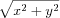
from the origin. After all, we are teaching you how to design programs not how to be a geometer.To develop the desired expression, it is best to hit RUN and to experiment in the interactions area. The RUN action tells DrRacket what the current values of x and y are so that you can experiment with expressions that involve x and y:Once you have the expression that produces the correct result, copy it from the interactions area to the definitions area, right below the two variable definitions.To confirm that the expression works properly, change the two definitions so that x represents 12 and y stands for 5. If you click RUN now, the result should be 13.
Your mathematics teacher would say that you computed the distance formula. To use the formula on alternative inputs, you need to open DrRacket, edit the definitions of x and y so they represent the desired coordinates, and click RUN. But this way of reusing the distance formula is cumbersome and naive. Instead, we will soon show you a way to define functions, which makes re-using formulas straightforward. For now, we use this kind of exercise to call attention to the idea of functions and to prepare you for programming with them.

1.2 The Arithmetic Of Strings
A wide-spread prejudice about computers concerns its innards. Many believe
that it is all about bits and bytes—
Programming languages are about calculating with information, and information comes in all shapes and forms. For example, a program may deal with colors, names, business letters, or conversations between people. Even though we could encode this kind of information as numbers, it would be a horrible idea. Just imagine remembering large tables of codes, such as 0 means “red” and 1 means “hello,” etc.
Instead most programming languages provide at least one kind of data that deals with such symbolic information. For now, we use BSL’s strings. Generally speaking, a String is a sequence of the characters that you can enter on the keyboard enclosed in double quotes, plus a few others, about which we aren’t concerned just yet. In Prologue: How to Program, we have seen a number of BSL strings: "hello", "world", "blue", "red", etc. The first two are words that may show up in a conversation or in a letter; the others are names of colors that we may wish to use.
> (string-append "what a " "lovely " "day" " for learning BSL") "what a lovely day for learning BSL"
Then use string primitives to create an expression that concatenates prefix and suffix and adds "_" between them. When you run this program, you will see "hello_world" in the interactions area.See exercise 1 for how to create expressions using DrRacket.
1.3 Mixing It Up
string-length consumes a string and produces a (natural) number;
string-ith consumes a string s together with a natural number i and then extracts the one-character substring located at the ith position (counting from 0); and
number->string consumes a number and produces a string.
> (string-length 42) string-length: expects a string, given 42
(+ (string-length "hello world") 60)
(+ (string-length "hello world") 60) = (+ 11 60) = 71
(+ (string-length (number->string 42)) 2) = (+ (string-length "42") 2) = (+ 2 2) = 4
(+ (string-length 42) 1)
Then create an expression using string primitives that adds "_" at position i. In general this means the resulting string is longer than the original one; here the expected result is "hello_world".Position means i characters from the left of the string—but computer scientists start counting at 0. Thus, the 5th letter in this example is "w", because the 0th letter is "h". Hint: when you encounter such “counting problems” you may wish to add a string of digits below str to help with counting: See exercise 1 for how to create expressions in DrRacket.
Exercise 4. Use the same setup as in exercise 3. Then create an expression that deletes the ith position from str. Clearly this expression creates a shorter string than the given one; contemplate which values you may choose for i.
1.4 The Arithmetic Of Images
Images represent symbolic data somewhat like strings. To work with images, use the "2htdp/image" teachpack. Like strings, you used DrRacket to insert images wherever you would insert an expression into your program, because images are values just like numbers and strings.
circle produces a circle image from a radius, a mode string, and a color string;
ellipse produces an ellipse from two radii, a mode string, and a color string;
line produces a line from two points and a color string;
rectangle produces a rectangle from a width, a height, a mode string, and a color string;
text produces a text image from a string, a font size, and a color string; and
triangle produces an upward-pointing equilateral triangle from a size, a mode string, and a color string.
> (star 12 "solid" "green")
image-width determines the width of a given image in terms of pixels;
image-height determines the height of an image;
A proper understanding of the third kind of image primitives—
overlay places all the images to which it is applied on top of each other, using the center as anchor point. You encountered this function in the Arithmetic And Arithmetic.
overlay/xy is like overlay but accepts two numbers—
x and y— between two image arguments. It shifts the second image by x pixels to the right and y pixels down — all with respect to the image’s center; unsurprisingly, a negative x shifts the image to the left and a negative y up. overlay/align is like overlay but accepts two strings that shift the anchor point(s) to other parts of the rectangles. There are nine different positions overall; experiment with all possibilities!
empty-scene creates an framed rectangle of a specified width and height;
place-image places an image into a scene at a specified position. If the image doesn’t fit into the given scene, it is appropriately cropped.
add-line consumes an scene, four numbers, and a color to draw a line of that color into the given image. Again, experiment with it to find out how the four arguments work together.
(define cat )
Create an expression that counts the number of pixels in the image. See exercise 1 for how to create expressions in DrRacket.
Exercise 6. Use the picture primitives to create the image of a simple automobile.
Exercise 7. Use the picture primitives to create the image of a simple boat.
Exercise 8. Use the picture primitives to create the image of a simple tree.
1.5 The Arithmetic Of Booleans
We need one last kind of primitive data before we can design programs: Boolean values. There are only two kinds of Boolean values: true and false. Programs use Boolean values for representing decisions or the status of switches.
- and not always picks the Boolean that isn’t given:
Finally, there is more to or and and than these explanations suggest, but to explain the extra bit requires another look at mixing up data in nested expressions.
Create an expression that computes whether b1 is false or b2 is true. So in this particular case, the answer is false. (Why?)See exercise 1 for how to create expressions in DrRacket. How many possible combinations of true and false can you think of for associating with b1 and b2?
1.6 Mixing It Up With Booleans
(define x 2)
(define x 0)
In addition to =, BSL provides a host of other comparison primitives. Explain what the following four comparison primitives determine about numbers: <, <=, >, >=.
Strings aren’t compared with = and its relatives. Instead, you must use string=? or string<=? or string>=? if you are ever in a position where you need to compare strings. While it is obvious that string=? checks whether the two given strings are equal, the other two primitives are open to interpretation. Look up their documentation, or experiment with them, guess, and then check in the documentation whether you guessed right.
The next few chapters introduce better expressions than if to express conditional computations and, most importantly, systematic ways for designing them.
(define cat )
Create an expression that computes whether the image is "tall" or "wide". An image should be labeled "tall" if its height is larger or equal to its width; otherwise it is "wide". See exercise 1 for how to create expressions in DrRacket; as you experiment, replace the image of the cat with rectangles of your choice to ensure you know the expected answer.Now try the following modification. Create an expression that computes whether a picture is "tall", "wide", or "square".
1.7 Predicates: Know Thy Data
(* (+ (string-length 42) 1) pi)
(define in ...) (string-length in)
Every class of data that we introduced in this chapter comes with a predicate: string?, image?, and boolean?. Experiment with them to ensure you understand how they work.
In addition to predicates that distinguish different forms of data, programming languages also come with predicates that distinguish different kinds of numbers. In BSL, numbers are classified in two ways: by construction and by their exactness. Construction refers to the familiar sets of numbers: integer?, rational?, real?, and complex?. You may know these terms from secondary school.Evaluate (sqrt -1) in the interactions area and take a close look at the result. The result you see is the first so-called complex number anyone encounters. While your mathematics teacher may have told you that one doesn’t compute the square root of negative numbers, truth is that real mathematicians and programmers find it acceptable and useful to do so anyway. But don’t worry: understanding complex numbers is not essential to being a programmer. As for exactness, we have mentioned the idea before. For now, experiment with exact? and inexact? to make sure they perform the checks that their names suggest. Later we are going to discuss the nature of numbers in some detail.
(define in "hello")
Then create an expression that converts whatever in represents to a number. For a string, it determines how long the string is; for an image, it uses the area; for a number, it decrements the number, unless it is already 0 or negative; for true it uses 10 and for false 20.See exercise 1 for how to create expressions in DrRacket.
Exercise 12. Now relax, eat, sleep, and then tackle the next chapter.
2 Functions And Programs
As far as programming is concerned, arithmetic is half the game. The other half is “algebra.” Of course, our notion of “algebra” relates to the school notion of algebra just as much as the notion of “arithmetic” from the preceding chapter relates to the ordinary notion of grade-school arithmetic. The creation of real programs involves variables and thus functions, meaning basic notions from algebra. Once we can deal with functions, we can move on to programs, which “compose” functions to achieve their overall purpose.
2.1 Functions
From a high-level perspective, a program is a function. A program, like a function in mathematics, consumes inputs, and it produces outputs. In contrast to mathematical functions, programs work with a whole variety of data: numbers, strings, images, and so on. Furthermore, programs may not consume all of the data at once; instead a program may incrementally request more data or not, depending on what the computation needs. Last but not least, programs are triggered by external events. For example, a scheduling program in an operating system may launch a monthly payroll program on the last day of every month. Or, a spreadsheet program may react to certain events on the keyboard with filling some cells with numbers.
Definitions: While many programming languages obscure the relationship between programs and functions, BSL brings it to the fore. Every BSL programs consists of definitions, usually followed by an expression that involves those definitions. There are two kinds of definitions:
constant definitions, of the shape (define AVariable AnExpression), which we encountered in the preceding chapter; and
function definitions, which come in many flavors, one of which we used in the Prologue.
“(define (”,
the name of the function,
followed by one or more variables, separated by space and ending in “)”,
and an expression followed by “)”.
Before we explain why these examples are silly, we need to explain what
function definitions mean. Roughly speaking, a function definition
introduces a new operation on data; put differently, it adds an operation
to our vocabulary if we think of the primitive operations as the ones that
are always available. Like a primitive function, a defined function
consumes inputs. The number of variables determines how many inputs—
The examples are silly because the expressions inside the functions do not involve the variables. Since variables are about inputs, not mentioning them in the expressions means that the function’s output is independent of their input. We don’t need to write functions or programs if the output is always the same.
(define x 3)
For now, the only remaining question is how a function obtains its inputs. And to this end, we turn to the notion of applying a function.
write “(”,
write down the name of a defined function f,
write down as many arguments as f consumes, separated by some space, and
write down “)”.
> (f 1) 1
> (f 2) 1
> (f "hello world") 1
> (f true) 1
> (f) f: expects 1 argument, but found none
> (f 1 2 3 4 5) f: expects only 1 argument, but found 5
> (+) +: expects at least 2 arguments, but found none
Evaluating a function application proceeds in three steps. First, DrRacket determines the values of the argument expressions. Second, it checks that the number of arguments and the number of function parameters (inputs) are the same. If not, it signals an error. Finally, if the number of actual inputs is the number of expected inputs, DrRacket computes the value of the body of the function, with all parameters replaced by the corresponding argument values. The value of this computation is the value of the function application.
(string-append "hello" " " "world") = "hello world"
(define (opening first last) (string-append "Dear " first ","))
> (opening "Matthew" "Fisler") "Dear Matthew,"
(opening "Matthew" "Fisler") = (string-append "Dear " "Matthew" ",") = "Dear Matthew,"
To summarize, this section introduces the notation for function
applications—
Exercise 13. Define a function that consumes two numbers, x and y, and that computes the distance of point (x,y) to the origin.
In exercise 1 you developed the right-hand side for this function. All you really need to do is add a function header. Remember this idea in case you are ever stuck with a function. Use the recipe of exercise 1 to develop the expression in the interactions area, and then write down the function definition.
Exercise 14. Define the function cube-volume, which accepts the length of a side of a cube and computes its volume. If you have time, consider defining cube-surface, too.
Exercise 15. Define the function string-first, which extracts the first character from a non-empty string. Don’t worry about empty strings.
Exercise 16. Define the function string-last, which extracts the last character from a non-empty string. Don’t worry about empty strings.
Exercise 17. Define the function bool-imply. It consumes two Boolean values, call them b1 and b2. The answer of the function is true if b1 is false or b2 is true. Note: Logicians call this Boolean operation implication and often use the symbol =>, pronounced “implies,” for this purpose. While BSL could define a function with this name, we avoid that name because it is too similar to the comparison operations for numbers <= and >=, and it would thus easily be confused. See exercise 9.
Exercise 18. Define the function image-area, which counts the number of pixels in a given image. See exercise 5 for ideas.
Exercise 19. Define the function image-classify, which consumes an image and produces "tall" if the image is taller than it is wide, "wide" if it is wider than it is tall, or "square" if its width and height are the same. See exercise 10 for ideas.
Exercise 20. Define the function string-join, which consumes two strings and appends them with "_" in between. See exercise 2 for ideas.
Exercise 21. Define the function string-insert, which consumes a string and a number i and which inserts "_" at the ith position of the string. Assume i is a number between 0 and the length of the given string (inclusive). See exercise 3 for ideas. Also ponder the question how string-insert ought to cope with empty strings.
Exercise 22. Define the function string-delete, which consumes a string and a number i and which deletes the ith position from str. Assume i is a number between 0 (inclusive) and the length of the given string (exclusive). See exercise 4 for ideas. Can string-delete deal with empty strings?
2.2 Composing Functions
A program rarely consists of a single function definition and an
application of that function. Instead, a typical program consists of a
“main” function or a small collection of “main event handlers.” All of
these use other functions—
(define (letter fst lst signature-name) (string-append (opening fst) "\n\n" (body fst lst) "\n\n" (closing signature-name))) (define (opening fst) (string-append "Dear " fst ",")) (define (body fst lst) (string-append "We have discovered that all people with the last name " "\n" lst " have won our lottery. So, " fst ", " "\n" "hurry and pick up your prize.")) (define (closing signature-name) (string-append "Sincerely," "\n\n" signature-name))
> (letter "Matthew" "Fisler" "Felleisen") "Dear Matthew,\n\nWe have discovered that all people with ...\n\n"
In general, when a problem refers to distinct tasks of computation, a program should consist of one function per task and a main function that puts it all together. We formulate this idea as a simple slogan:
Define one function per task.
The advantage of following this slogan is that you get reasonably small functions, each of which is easy to comprehend, and whose composition is easy to understand. Later, we see that creating small functions that work correctly is much easier than creating one large function. Better yet, if you ever need to change a part of the program due to some change to the problem statement, it tends to be much easier to find the relevant program parts when it is organized as a collection of small functions.
Here is a small illustration of this point with a sample problem:
Sample Problem: Imagine the owner of a monopolistic movie theater. He has complete freedom in setting ticket prices. The more he charges, the fewer the people who can afford tickets. The less he charges, the more it costs to run a show because attendance goes up. In a recent experiment the owner determined a relationship between the price of a ticket and average attendance.
At a price of $5.00 per ticket, 120 people attend a performance. For each 10-cent change in the ticket price, the average attendance changes by 15 people. That is, if the owner charges $5.10, some 105 people attend on the average; if the prices goes down to $4.90, average attendance increases to 135. Let us translate this idea into a mathematical formula:avg. attendance = 120 - (change in price * (15 people / 0.10))
Stop! Explain the minus sign before you proceed.Unfortunately, the increased attendance also comes at an increased cost. Every performance comes at a fixed costs of $180 to the owner plus a variable cost of $0.04 per attendee.
The owner would like to know the exact relationship between profit and ticket price so that he can determine the price at which he can make the highest profit.
The problem statement specifies how the number of attendees depends on the ticket price. Computing this number is clearly a separate task and thus deserves its own function definition:
The function mentions the four constants—120, 5.0, 15, and 0.1— determined by the owner’s experience. The revenue is exclusively generated by the sale of tickets, meaning it is exactly the product of ticket price and number of attendees:
The number of attendees is calculated by the attendees function of course.The costs consist of two parts: a fixed part ($180) and a variable part that depends on the number of attendees. Given that the number of attendees is a function of the ticket price, a function for computing the cost of a show also consumes the price of a ticket and uses it to compute the number of tickets sold with attendees:
Again, this function also uses attendees to determine the number of attendees.Finally, profit is the difference between revenue and costs:
(define (profit ticket-price) (- (revenue ticket-price) (cost ticket-price))) Even the definition of profit suggests that we use the functions revenue and cost. Hence, the profit function must consume the price of a ticket and hand this number to the two functions it uses.
Exercise 23. Our solution to the sample problem contains several constants in the middle of functions. As One Program, Many Definitions already points out, it is best to give names to such constants so that future readers understand where these numbers come from. Collect all definitions in DrRacket’s definitions area and change them so that all magic numbers are refactored into constant definitions.
Exercise 24. Determine the potential profit for the following ticket prices: $1, $2, $3, $4, and $5. Which price should the owner of the movie theater choose to maximize his profits? Determine the best ticket price down to a dime.
(define (profit price) (- (* (+ 120 (* (/ 15 0.1) (- 5.0 price))) price) (+ 180 (* 0.04 (+ 120 (* (/ 15 0.1) (- 5.0 price)))))))
Exercise 25. After studying the costs of a show, the owner discovered several ways of lowering the cost. As a result of his improvements, he no longer has a fixed cost. He now simply pays $1.50 per attendee.
Modify both programs to reflect this change. When the programs are modified, test them again with ticket prices of $3, $4, and $5 and compare the results.
2.3 Global Constants
write “(define ”,
write down the name of the variable ...
followed by a space and an expression, and
write down “)”.
; the current price of a movie ticket (define CURRENT-PRICE 5) ; useful to compute the area of a disk: (define ALMOST-PI 3.14) ; a blank line: (define NL "\n") ; an empty scene: (define MT (empty-scene 100 100))
(define ALMOST-PI 3.14159) ; an empty scene: (define MT (empty-scene 200 800))
(define WIDTH 100) (define HEIGHT 200) (define MID-WIDTH (/ WIDTH 2)) (define MID-HEIGHT (/ HEIGHT 2))
Again, we use a simple slogan to remind you about the importance of constants:
Introduce definitions for all constants mentioned in a problem statement.
Exercise 26. Define constants for the price optimization program so that the price sensitivity of attendance (15 people for every 10 cents) becomes a computed constant.
2.4 Programs
a batch program consumes all of its inputs at once and computes its result. Its main function composes auxiliary functions, which may refer to additional auxiliary functions, and so on. When we launch a batch program, the operating system calls the main function on its inputs and waits for the program’s output.
an interactive program consumes some of its inputs, computes, produces some output, consumes more input, and so on. We call the appearance of an input an event, and we create interactive programs as event-driven programs. The main function of such an event-driven program uses an expression to describe which functions to call for which kinds of events. When we launch an interactive program, the main function informs the operating system of this description. As soon as input events happen, the operating system calls the matching functions. Similarly, the operating system knows from the description when and how to present the results of these function calls as output.
In this section we present simple examples of both batch and interactive programs.
2.4.1 Batch Programs
As mentioned, a batch program consumes all of its inputs at once and computes the result from these inputs. Its main function may expect the arguments themselves or the names of files from which to retrieve the inputs; similarly, it may just return the output or it may place it in a file.
Once programs are created, we want to use them. In DrRacket, we launch batch programs in the interactions area so that we can watch the program at work.
Programs are even more useful if they can retrieve the input from some file and deliver the output to some other file. The name batch program originated from the early days of computing when a program read an entire file (or several files) and placed the result in some other file(s), without any intervention after the launch. Conceptually, we can think of the program as reading an entire file at once and producing the result file(s) all at once.
read-file, which reads the content of an entire file as a string, and
write-file, which creates a file from a given string.
> (write-file "sample.dat" "212") "sample.dat"
> (read-file "sample.dat") "212"
212 |
> (write-file 'stdout "212") 212
'stdout
Let us illustrate the creation of a batch program with a simple example. Suppose we wish to create a program that convertsThis book is not about memorizing facts, but we do expect you to know where to find them. Do you know where to find out how temperatures are converted? a temperature measured on a Fahrenheit thermometer into a Celsius temperature. Don’t worry, this question isn’t a test about your physics knowledge; here is the conversion formula:
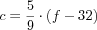
Naturally in this formula f is the Fahrenheit temperature and c is the Celsius temperature. While this formula might be good enough for a pre-algebra text book, a mathematician or a programmer would write c(f) on the left side of the equation to remind readers that f is a given value and c is computed from f.
Translating this into BSL is straightforward:
(define (f2c f) (* 5/9 (- f 32)))
Recall that 5/9 is a number, a rational fraction to be precise, and more importantly, that c depends on the given f, which is what the function notation expresses.
> (f2c 32) 0
> (f2c 212) 100
> (f2c -40) -40
(define (convert in out) (write-file out (number->string (f2c (string->number (read-file in))))))
(read-file in) retrieves the content of the file called in as a string;
string->number turns this string into a number;
f2c interprets the number as a Fahrenheit temperature and converts it into a Celsius temperature;
number->string consumes this Celsius temperature and turns it into a string;
and (write-file out ...) places this string into the file named out.
> (write-file "sample.dat" "212") "sample.dat"
> (convert "sample.dat" 'stdout) 100
'stdout
> (convert "sample.dat" "out.dat") "out.dat"
> (read-file "out.dat") "100"
(define (convert in out) (write-file out (number->string (f2c (string->number (read-file in)))))) (define (f2c f) (* 5/9 (- f 32))) (convert "sample.dat" "out.dat")
In addition to running the batch program, it is also instructive to step through the computation. Make sure that the file "sample.dat" exists and contains just a number, then click the STEP button in DrRacket. Doing so opens another window in which you can peruse the computational process that the call to the main function of a batch program triggers. You will see that the process follows the above outline.
Exercise 27. Recall the letter program from Composing Functions. We launched this program once, with the inputs "Matthew", "Fisler", and "Felleisen". Here is how to launch the program and have it write its output to the interactions area:
> (write-file 'stdout (letter "Matthew" "Fisler" "Felleisen"))
Dear Matthew,
We have discovered that all people with the last name
Fisler have won our lottery. So, Matthew,
hurry and pick up your prize.
Sincerely,
Felleisen
'stdout
Of course, programs are useful because you can launch them for many different inputs, and this is true for letter, too. Run letter on three inputs of your choice.
Here is a letter-writing batch program that reads names from three files and writes a letter to one:
(define (main in-fst in-lst in-signature out) (write-file out (letter (read-file in-fst) (read-file in-lst) (read-file in-signature)))) The function consumes four strings: the first three are the names of input files and the last one serves as output file. It uses the first three to read one string each from the three named files, hands these strings to letter, and eventually writes the result of this function call into the file named by out, the fourth argument to main.Create appropriate files, launch main, and check whether it delivers the expected letter.
Note: Once you understand Programming With Lists, you will be able to use other functions from "batch-io", and then you will have no problem writing letters for tens of thousands of lucky lottery winners.
2.4.2 Interactive Programs
No matter how you look at it, batch programs are old-fashioned. Even if businesses have used them for decades to automate useful tasks, people prefer interactive programs. Indeed, in this day and age, people mostly interact with desktop applications via a keyboard and a mouse generating input events such as key presses or mouse clicks. Furthermore, interactive programs can also react to computer-generated events, for example, clock ticks or the arrival of a message from some other computer.
Exercise 28. Most people no longer use desktop computers to run applications but cell phones, tablets, and their cars’ information control screens. Soon people will use wearable computers in the form of intelligent glasses, clothes, and sports gear. In the somewhat more distant future, people may come with built-in bio computers that directly interact with body functions. Think of ten different forms of events that software applications on such computers will have to deal with.
This purpose of this section is to introduce the mechanics of writing interactive BSL programs. Because most large example in this book are interactive programs, we introduce the ideas slowly and carefully. You may wish to return to this section when you tackle some of the interactive programming projects; a second or third reading may clarify some of the advance aspects of the mechanics.
By itself, a raw computer is a useless piece of physical equipment. It is called hardware because you can touch it. This equipment becomes useful once you install software, that is, a suite of programs. Usually the first piece of software to be installed on a computer is an operating system. It has the task of managing the computer for you, including connected devices such as the monitor, the keyboard, the mouse, the speakers, and so on. The way it works is that when a user presses a key on the keyboard, the operating system runs a function that processes key strokes. We say that the key stroke is a key event, and the function is an event handler. In the same vein, the operating system the operating system runs an event handler for clock ticks, for mouse actions, and so on. Conversely, after an event handler is done with its work, the operating system may have to change the image on the screen, ring a bell, or print a document. To accomplish these tasks, it also runs functions that translate the operating system’s data into sounds, images, and actions on the printer.
Naturally, different programs have different needs. One program may interpret key strokes as signals to control a nuclear reactor; another passes them to a word processor. To make a general-purpose computer work on these radically different tasks, different programs install different event handlers. That is, a rocket launching program uses one kind of function to deal with clock ticks while an oven’s service functions uses a different kind.
Designing an interactive program requires a way to designate some function as the one that takes care of keyboard events, another function for dealing with clock tick, a third one for presenting some data as an image, and so forth. It is the task of an interactive program’s main function to communicate these designations to the operating system, that is, the software platform on which the program is launched.
DrRacket is a small operating system and BSL, one of its programming languages, comes with the "universe" teachpack, which provides this communication mechanisms. That is, big-bang is your means to install event handlers and functions that translate data into presentable form. A big-bang expression consists of one required subexpression and one required clause. The subexpression evaluates to the initial state of the program, and the required clause tells DrRacket how to render the current state as a program.
> (number->square 5) > (number->square 10) > (number->square 20)
every time the clock ticks, subtract 1 from the current state;
then check whether zero? is true of the new state and if so, stop; and
every time an event handler is finished with its work, use number->square to render the state as an image.
Stop! Explain in your own words how the expression is evaluated.
100, 99, 98, ..., 2, 1, 0
(define (reset s ke) 100)
Stop! Explain what happens when you evaluate this expression, count to 10, and press "a".
What you will see is that the red square shrinks again, one pixel per clock tick. As soon as you press the "a" key on the keyboard though, the red square re-inflates to full size, because reset is called on the current length of the square and "a" and returns 100. This number becomes big-bang’s new state and number->square renders it as a full-sized red square.
The evaluation of this big-bang expression starts with cw0, which is usually an expression. DrRacket, our operating system, installs the value of cw0 as the current state of the world, for short current world. It uses render to translate the current world into an image, which is then displayed in a separate window. Indeed, render is the only means for a big-bang expression to present data to the external world.
Every time the clock ticks, DrRacket applies tock to big-bang’s current world and receives a value in response; big-bang treats this return value as the next current world.
Every time a key is pressed, DrRacket applies ke-h to big-bang’s current world and a string that represents the key; for example, pressing the “a” key is represented with "a" and the left arrow key with "left". When ke-h returns a value, big-bang treats it as the next current world.
Every time a mouse enters the window, leaves it, moves, or is pressed, DrRacket applies ke-h to big-bang’s current world, the event’s x and y coordinates, and a string that represents the kind of mouse event that happened; for example, pressing a mouse’s button is represented with "button-down". When me-h returns a value, big-bang treats it as the next current world.
tick #
1
2
3
...
current world
cw0
cw1
cw2
...
its image
(render cw0)
(render cw1)
(render cw2)
...
on clock tick
(tock cw0)
(tock cw1)
(tock cw2)
...
on key stroke
(ke-h cw0 ...)
(ke-h cw1 ...)
(ke-h cw2 ...)
...
on mouse event
(me-h cw0 ...)
(me-h cw1 ...)
(me-h cw2 ...)
...
The table in figure 7 concisely summarizes this process. In the first row, it specifies the current time: the first clock tick, the second, and so forth. The second row associates the current time with a current world. With render, this series of current worlds is mapped to a series of images, which is displayed in the separate window. The last three rows specify the result of applying tock, ke-h, or me-h to the current world and additional data as needed. Only one of these three expressions is evaluated; no matter which one, its result appears in the next column in row 1 as the next current world.
cw1 is the result of (ke-h cw0 "a"), i.e., the fourth cell in the e1 column;
cw2 is the result of (tock cw1), i.e., the third cell in the e2 column;
cw3 is the result of (me-h cw3 90 100 "button-down").
(define cw3 (me-h (tock (ke-h w0 "a"))) 90 100 "button-down")
In short, the sequence of events determines in which order you traverse the above tables of possible worlds to arrive at the one and only one current world for each time slot. Note that DrRacket does not touch the current world; it merely safeguards it and passes it to event handlers and other functions when needed.
(define (main y) (big-bang y [on-tick sub1] [stop-when zero?] [to-draw place-dot-at] [on-key stop])) (define (place-dot-at y) (place-image (circle 3 "solid" "red") 50 y (empty-scene 100 100))) (define (stop y ke) 0)
> (place-dot-at 89) 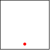
> (place-dot-at 22) 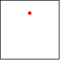
> (stop 89 "q") 0
> (main 90)
Take a deep breath.
By now, you may feel that these first two chapters are overwhelming. They introduced so many new concepts, including a new language, its vocabulary, its meaning, its idioms, a tool for writing down texts in this vocabulary, running these so-called “programs,” and the inevitable question of how to create them when presented with a problem statement. To overcome this feeling, the next chapter takes a step back and explains how to design programs systematically from scratch, especially interactive programs. So take a breather and continue when ready.
3 How To Design Programs
The first few chapters of this book show that learning to program requires some mastery of many concepts. On the one hand, programming needs some language, a notation for communicating what we wish to compute. The languages for formulating programs are artificial constructions, though acquiring a programming language shares some elements with acquiring a natural language: we need to learn the vocabulary of the programming language, to figure out its grammar, and to understand what its "phrases" mean.
On the other hand, it is critical to learn how to get from a problem statement to a program. We need to determine what is relevant in the problem statement and what can be ignored. We need to tease out what the program consumes, what it produces, and how it relates inputs to outputs. We have to know, or find out, whether the chosen language and its libraries provide certain basic operations for the data that our program is to process. If not, we might have to develop auxiliary functions that implement these operations. Finally, once we have a program, we must check whether it actually performs the intended computation. And this might reveal all kinds of errors, which we need to be able to understand and fix.
All this sounds rather complex and you might wonder why we don’t just muddle our way through, experimenting here and there, leaving well enough alone when the results look decent. This approach to programming, often dubbed “garage programming,” is common and succeeds on many occasions; sometimes it is the launching pad for a start-up company. Nevertheless, the start-up cannot sell the results of the “garage effort” because only the original programmers and their friends can use them.
A good program comes with a short write-up that explains what it does, what inputs it expects, and what it produces. Ideally, it also comes with some assurance that it actually works. In the best circumstances, the program’s connection to the problem statement is evident so that a small change to the problem statement is easy to translate into a small change to the program. Software engineers call this a “programming product.”
The word “other” also includes older versions of the programmer who usually cannot recall all the thinking that the younger version put into the production of the program.
All this extra work is necessary because programmers don’t create programs for themselves. Programmers write programs for other programmers to read, and on occasion, people run these programs to get work done. Most programs are large, complex collections of collaborating functions, and nobody can write all these functions in a day. Programmers join projects, write code, leave projects; others take over their programs and work on them. Another difficulty is that the programmer’s clients tend to change their mind about what problem they really want solved. They usually have it almost right, but more often than not, they get some details wrong. Worse, complex logical constructions such as programs almost always suffer from human errors; in short, programmers make mistakes. Eventually someone discovers these errors and programmers must fix them. They need to re-read the programs from a month ago, a year ago, or twenty years ago and change them.
Exercise 29. Research the “year 2000” problem and what it meant for programmers.
In this book, we present a design recipe that integrates a step-by-step
process with a way of organizing programs around problem data. For the
readers who don’t like to stare at blank screens for a long time, this
design recipe offers a way to make progress in a systematic manner. For
those of you who teach others to design programs, the recipe is a device
for diagnosing a novice’s difficulties. For others, our recipe might be
something that they can apply to other areas, say medicine, journalism, or
engineering. For those who wish to become real programmers, the design
recipe also offers a way to understand and work on existing
programs—
3.1 Designing Functions
3.1.1 Information and Data
The purpose of a program is to describe a computational process of working
through information and producing new information. In this sense, a
program is like the instructions a mathematics teacher gives to grade
school students. Unlike a student, however, a program works with more than
numbers; it calculates with navigation information, looks up a person’s
address, turns on switches, or inspects the state of a video game. All
this information comes from a part of the real world—
Information plays a central role in our description. Think of information as facts about the program’s domain. For a program that deals with a furniture catalog, a “table with five legs” or a “square table of two by two meters” are pieces of information. A game program deals with a different kind of domain, where “five” might refer to the number of pixels per clock tick that some objects travels on its way from one part of the screen to another. Or, a payroll program is likely to deal with “five deductions.”
For a program to process information, it must turn it into some form of data, also called values, in the programming language; then it processes the data; and once it is finished, it turns the resulting data into information again. An interactive program may even intermingle these steps, acquiring more information from the world as needed and delivering information in between.
We use BSL and DrRacket so that you do not have to worry about the translation of information into data. In DrRacket’s BSL you can apply a function directly to data and observe what it produces. As a result, we avoid the serious chicken-and-egg problem of writing functions that convert information into data and vice versa. For simple kinds of information, designing such program pieces is trivial; for anything other than simple information, you need to know about parsing, for example, and that immediately requires a lot of expertise in program design.
Software engineers use the slogan model-view-control (MVC) for the way BSL and DrRacket separate data processing from parsing information into data and turning data into information. Indeed, it is now accepted wisdom that well-engineered software systems enforce this separation, even though most introductory books still co-mingle them. Thus, working with BSL and DrRacket allows you to focus on the design of the core of programs and, when you have enough experience with that, you can learn to design the information-data translation parts.
Here we use the "batch-io" and "universe" teachpacks to demonstrate
how complete programs are designed. That is, this book—
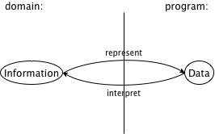
Given the central role of information and data, program design must clearly
start with the connection between them. Specifically, we—
42 may refer to the number of pixels from the top margin in the domain of images;
42 may denote the number of pixels per clock tick that a simulation or game object moves;
42 may mean a temperature, on the Fahrenheit, Celsius, or Kelvin scale for the domain of physics;
42 may specify the size of some table if the domain of the program is a furniture catalog; or
42 could just count the number of chars a batch program has read.
Computer scientists use “class” to mean something like a “mathematical set.” They also say that a value is an element of a class.
Since this knowledge is so important for everyone who reads the program, we often write it down in the form of comments, which we call data definitions. The purpose of a data definition is two-fold. On the one hand, it names a class or a collection of data, typically using a meaningful word. On the other hand, it informs readers how to create elements of this class of data and how to decide whether some random piece of data is an element of this collection.
; Temperature is a Number. ; interp. degrees Celsius
If you happen to know that the lowest possible temperatures is approximately -274C, you may wonder whether it is possible to express this knowledge in a data definition. Since data definitions in BSL are really just English descriptions of classes, you may indeed define the class of temperatures in a much more accurate manner than shown here. In this book, we use a stylized form of English for such data definitions, and the next chapter introduces the style for imposing constraints such as “larger than -274.”
At this point, you have encountered the names of some classes of data: Number, String, Image, and Boolean values. With what you know right now, formulating a new data definition means nothing more than introducing a new name for an existing form of data, for example, “temperature” for numbers. Even this limited knowledge, though, suffices to explain the outline of our design process.
- Express how you wish to represent information as data. A one-line comment suffices, for example,
; We use plain numbers to represent temperatures.
Formulate data definitions, like the one for Temperature above for the classes of data you consider critical for the success of your program. Write down a signature, a purpose statement, and a function header.
A function signature (shortened to signature here) is a BSL comment that tells the readers of your design how many inputs your function consumes, from what collection of data they are drawn, and what kind of output data it produces. Here are three examples:- for a function that consumes one string and produces a number:
- for a function that consumes a temperature and that produces a string:
; Temperature -> String
As this signature points out, introducing a data definition as an alias for an existing form of data makes it easy to read the intention behind signatures.Nevertheless, we recommend to stay away from aliasing data definitions for now. A proliferation of such names can cause quite some confusion. It takes practice to balance the need for new names and the readability of programs, and there are more important ideas to understand for now.
- for a function that consumes a number, a string, and an image and that produces an image:
A purpose statement is a BSL comment that summarizes the purpose of the function in a single line. If you are ever in doubt about a purpose statement, write down the shortest possible answer to the questionwhat does the function compute?
Every reader of your program should understand what your functions compute without having to read the function itself.A multi-function program should also come with a purpose statement. Indeed, good programmers write two purpose statements: one for the reader who may have to modify the code and another one for the person who wishes to use the program but not read it.
Finally, a header is a simplistic function definition, also called a stub. Pick one parameter for each input data class in the signature; the body of the function can be any piece of data from the output class. The following three function headers match the above three signatures:(define (f a-string) 0)
(define (g n) "a")
(define (h num str img) (empty-scene 100 100))
Our parameter names reflect what kind of data the parameter represents. Sometimes, you may wish to use names that suggest the purpose of the parameter.When you formulate a purpose statement, it is often useful to employ the parameter names to clarify what is computed. For example,; Number String Image -> Image ; add s to img, y pixels from top, 10 pixels to the left (define (add-image y s img) (empty-scene 100 100)) At this point, you can click the RUN button and experiment with the function. Of course, the result is always the same value, which makes these experiments quite boring.
Illustrate the signature and the purpose statement with some functional examples. To construct a functional example, pick one piece of data from each input class from the signature and determine what you expect back.
Suppose you are designing a function that computes the area of a square. Clearly this function consumes the length of the square’s side, and that is best represented with a (positive) number. The first process step should have produced something like this:
; Number -> Number ; compute the area of a square whose side is len (define (area-of-square len) 0) Add the examples between the purpose statement and the function header:
; Number -> Number ; compute the area of a square whose side is len ; given: 2, expect: 4 ; given: 7, expect: 49 (define (area-of-square len) 0) The next step is to take inventory,We owe the term “inventory” to Dr. Stephen Bloch. to understand what are the givens and what we do need to compute. For the simple functions we are considering right now, we know that they are given data via parameters. While parameters are placeholders for values that we don’t know yet, we do know that it is from this unknown data that the function must compute its result. To remind ourselves of this fact, we replace the function’s body with a template.
For now, the template contains just the parameters, e.g.,; Number -> Number ; compute the area of a square whose side is len ; given: 2, expect: 4 ; given: 7, expect: 49 (define (area-of-square len) (... len ...)) The dots remind you that this isn’t a complete function, but a template, a suggestion for an organization.The templates of this section look boring. Later, when we introduce complex forms of data, templates become interesting, too.
It is now time to code. In general, to code means to program, though often in the narrowest possible way, namely, to write executable expressions and function definitions.
To us, coding means to replace the body of the function with an expression that attempts to compute from the pieces in the template what the purpose statement promises. Here is the complete definition for area-of-square:; Number -> Number ; compute the area of a square whose side is len ; given: 2, expect: 4 ; given: 7, expect: 49 (define (area-of-square len) (sqr len)) To complete the add-image function takes a bit more work than that:; Number String Image -> Image ; add s to img, y pixels from top, 10 pixels to the left ; given: ; 5 for y, ; "hello" for s, and ; (empty-scene 100 100) for img ; expected: ; (place-image (text "hello" 10 "red") 10 5 (empty-scene 100 100)) (define (add-image y s img) (place-image (text s 10 "red") 10 y img)) In particular, the function needs to turn the given string s into an image, which is then placed into the given scene.- The last step of a proper design is to test the function on the examples that you worked out before. For now, click the RUN button and enter function applications that match the examples in the interactions area:
> (area-of-square 2) 4
> (area-of-square 7) 49
The results must match the output that you expect; you must inspect each result and make sure it is equal to what is written down in the example portion of the design. If the result doesn’t match the expected output, consider the following three possibilities:You miscalculated and determined the wrong expected output for some of the examples.
Alternatively, the function definition computes the wrong result. When this is the case, you have a logical error in your program, also known as a bug.
Both the examples and the function definition are wrong.
When you do encounter a mismatch between expected results and actual values, we recommend that you first re-assure yourself that the expected results are correct. If so, assume that the mistake is in the function definition. Otherwise, fix the example and then run the tests again. If you are still encountering problems, you may have encountered the third, somewhat rare situation.
3.2 Finger Exercises
The first few of the following exercises are almost copies of previous ones. The difference is that this time they used the word “design” not “define,” meaning you should use the design recipe to create these functions and your solutions should include all relevant pieces. (Skip the template; it is useless here.) Finally, as the title of the section suggests these exercises are practice exercises to help you internalize the process. Until the steps become second nature, never skip one; that leads to easily avoided errors and unproductive searches for the causes of those flaws. There is plenty of room left in programming for complicated errors; we have no need to waste our time on silly ones.
Exercise 30. Design the function string-first, which extracts the first character from a non-empty string. Don’t worry about empty strings.
Exercise 31. Design the function string-last, which extracts the last character from a non-empty string.
Exercise 32. Design the function image-area, which counts the number of pixels in a given image.
Exercise 33. Design the function string-rest, which produces a string like the given one with the first character removed.
Exercise 34. Design the function string-remove-last, which produces a string like the given one with the last character removed.
3.3 Domain Knowledge
Knowledge from external domains such as mathematics, music, biology, civil engineering, art, etc. Because programmers cannot know all of the application domains of computing, they must be prepared to understand the language of a variety of application areas so that they can discuss problems with domain experts. This language is often that of mathematics, but in some cases, the programmers must learn a language as they work through problems with domain experts.
And knowledge about the library functions in the chosen programming language. When your task is to translate a mathematical formula involving the tangent function, you need to know or guess that your chosen language comes with a function such as BSL’s tan. When, however, you need to use BSL to design image-producing functions, you will benefit from understanding the possibilities of the "2htdp/image" teachpack.
You can recognize problems that demand domain knowledge from the data definitions that you work out. As long as the data definitions use classes that exist in the chosen programming language, the definition of the function body (and program) mostly relies on expertise in the domain. Later, when we introduce complex forms of data, the design of functions demands computer science knowledge.
3.4 From Functions to Programs
Not all programs consist of a single function definition. Some require several functions, many also use constant definitions. No matter what, it is always important to design each function of a program systematically, though both global constants and the presence of auxiliary functions change the design process a bit.
When you have defined global constants, your functions may use those global constants to compute results. To remind yourself of their existence, you may wish to add these constants to your templates; after all, they belong to the inventory of things that may contribute to the function definition.
Multi-function programs come about because interactive programs automatically need event handling functions, state rendering functions, and possibly more. Even batch programs may require several different functions because they perform several separate tasks. Sometimes the problem statement itself suggests these tasks; other times you will discover the need for auxiliary functions as you are in the middle of designing some function.
For these reasons, we recommend keeping around a list of needed functions or a wish list.We owe the term “wish list” to Dr. John Stone. Each entry on a wish list should consist of three things: a meaningful name for the function, a signature, and a purpose statement. For the design of a batch program, put the main function on the wish list and start designing it. For the design of an interactive program, you can put the event handlers, the stop-when function, and the scene-rendering function on the list. As long as the list isn’t empty, pick a wish and design the function. If you discover during the design that you need another function, put it on the list. When the list is empty, you are done.
3.5 On Testing
Testing quickly becomes a labor-intensive chore. While it is easy to run
tests for small programs in the interactions are, doing so requires a lot
of mechanical intricate labor. As programmers grow their systems, they add
more and more tests. Soon this labor of testing becomes overwhelming, and
programmers become sloppy and neglect testing. At the same time, testing
is the first tool for discovering and preventing basic flaws. Sloppy
testing quickly leads to buggy functions—
; Number -> Number ; convert Fahrenheit temperatures to Celsius temperatures ; given 32, expected 0 ; given 212, expected 100 ; given -40, expected -40 (define (f2c f) (* 5/9 (- f 32)))
(check-expect (f2c -40) -40) (check-expect (f2c 32) 0) (check-expect (f2c 212) 100)
(check-expect (f2c -40) 40)
; Number -> Number ; convert Fahrenheit temperatures to Celsius temperatures (check-expect (f2c -40) -40) (check-expect (f2c 32) 0) (check-expect (f2c 212) 100) (define (f2c f) (* 5/9 (- f 32)))
You can place check-expect specifications above or below the
function definitions that they test. When you click RUN, DrRacket
collects all check-expect specifications and evaluates them
after all function definitions have been added to the
“vocabulary” of operations. The above figure shows how to exploit this
freedom to combine the example and test step. Instead of writing down the
examples as comments, you can translate them directly into tests. When
you’re all done with the design of the function, clicking RUN
performs the test. And if you ever change the function for some
reason—
(check-expect (render 50) 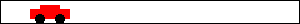) (check-expect (render 200) 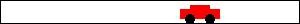)
(check-expect (render 50) (place-image CAR 50 Y-CAR BACKGROUND)) (check-expect (render 200) (place-image CAR 200 Y-CAR BACKGROUND))
Because it is so useful to have DrRacket conduct the tests and not to check everything yourself manually, we immediately switch to this style of testing for the rest of the book. This form of testing is dubbed unit testing, and BSL’s unit testing framework is especially tuned for novice programmers. One day you will switch to some other programming language; one of your first tasks will be to figure out its unit testing framework.
3.6 Designing World Programs
While the previous chapter introduces the "universe" teachpack in an ad hoc way, this section demonstrates how the design recipe helps you create world programs systematically. It starts with a brief summary of "universe" based on data definitions and function signatures. The second part spells out a design recipe for world programs, and the last one starts a series of exercises that runs through several of the next few chapters.
Figure 10 presents "universe" in a schematic and simplified way. The teachpack expects that a programmer develops a data definition that represents the state of the world and a function render that knows how to create an image for every possible state of the world. Depending on the needs of the program, the programmer must then design functions that respond to clock ticks, key strokes, and mouse events. Finally, an interactive program may need to stop when its current world belongs to a sub-class of states; end? recognizes these final states.
; WorldState : a data definition of your choice ; a collection of data that represents the state of the world ; render : ; WorldState -> Image ; big-bang evaluates (render cw) to obtain image of ; current world cw ; clock-tick-handler : ; WorldState -> WorldState ; for each tick of the clock, big-bang evaluates ; (clock-tick-handler cw) for current world cw to obtain ; new world ; key-stroke-handler : ; WorldState String -> WorldState ; for each key stroke, big-bang evaluates ; (key-stroke-handler cw ke) for current world cw and ; key stroke ke to obtain new world ; mouse-event-handler : ; WorldState Number Number String -> WorldState ; for each key stroke, big-bang evaluates ; (mouse-event-handler cw x y me) for current world cw, ; coordinates x and y, and mouse event me to ; obtain new world ; end? : ; WorldState -> Boolean ; after an event is processed, big-bang evaluates (end? cw) ; for current world cw to determine whether the program stops
Sample Problem: Design a program that moves a car across the world canvas, from left to right, at the rate of three pixels per clock tick.
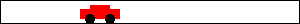 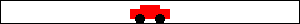
- For all those properties of the world that remain the same over time and are needed to render it as an Image, introduce constants. In BSL, we specify such constants via definitions. For the purpose of world programs, we distinguish between two kinds of constants:
“Physical” constants describe general attributes of objects in the world, such as the speed or velocity of an object, its color, its height, its width, its radius, and so forth. Of course these constants don’t really refer to physical facts, but many are analogous to physical aspects of the real world.
In the context of our sample problem, the radius of the car’s wheels and the distance between the wheels are such “physical” constants:Note how the second constant is computed from the first.Graphical constants are images of objects in the world. The program composes them into images that represent the complete state of the world.
We suggest you experiment in DrRacket’s interaction area to develop graphical constants.
Here is a graphical constant for the wheel of our sample car:(define WHEEL (circle WHEEL-RADIUS "solid" "black")) (define SPACE (rectangle ... WHEEL-RADIUS ... "white")) (define BOTH-WHEELs (beside WHEEL SPACE WHEEL)) Graphical constants are usually computed, and the computations tend to involve the physical constants and other graphical images.
Those properties that change over time—
in reaction to click ticks, key strokes, or mouse actions— give rise to the current state of the world. Your task is to develop a data representation for all possible states of the world. The development results in a data definition, which comes with a comment that tells readers how to represent world information as data and how to interpret data as information about the world. Choose simple forms of data to represent the state of the world.
For the running example, it is the car’s distance to the left margin that changes over time. While the distance to the right margin changes, too, it is obvious that we need only one or the other to create an image. A distance is measured in numbers, so the following is an adequate data definition:
An alternative is to count the number of clock ticks that have passed and to use this number as the state of the world. We leave this design variant as an exercise.Once you have a data representation for the state of the world, you need to design a number of functions so that you can form a valid big-bang expression.
To start with, you need a function that maps any given state into an image so that big-bang can render the sequence of states as images:; render
Next you need to decide which kind of events should change which aspects of the world state. Depending on your decisions, you need to design some of all of the following three functions:; clock-tick-handler ; key-stroke-handler ; mouse-event-handler Finally, if the problem statement suggests that the program should stop if the world has certain properties, you must design; end?
For the generic signatures and purpose statements of these functions, see figure 10. You should reformulate these generic purpose statements so that you have a better idea of what your functions must compute.In short, the desire to design an interactive program automatically creates several initial entries for your wish list. Work them off one by one and you get a complete world program.
Let us work through this step for the sample program. While big-bang dictates that we must design a rendering function, we still need to figure out whether we want any event handling functions. Since the car is supposed to move from left to right, we definitely need a function that deals with clock ticks. Thus, we get this wish list:; WorldState -> Image ; place the image of the car x pixels from the left margin of ; the BACKGROUND image (define (render x) BACKGROUND) ; WorldState -> WorldState ; add 3 to x to move the car right (define (tock x) x) Note how we tailored the purpose statements to the problem at hand, with an understanding of how big-bang will use these functions.Finally, you need a main function. Unlike all other functions, a main function for world programs doesn’t demand design. It doesn’t even require testing because its sole reason for existing is that you can launch your world program conveniently from DrRacket’s interaction area.
The one decision you must make concerns main’s arguments. For our sample problem we opt to apply main to the initial state of the world:; main : WorldState -> WorldState ; launch the program from some initial state (define (main ws) (big-bang ws [on-tick tock] [to-draw render])) Hence, you can launch this interactive program with> (main 13)
Let us now work through the rest of the program design process, using the design recipe for functions and other design concepts spelled out so far.
Exercise 35. Good programmersGood programmers establish a single point of control for all aspects of their programs, not just the graphical constants. Several chapters deal with this issue. ensure that an image such as CAR can be enlarged or reduced via a single change to a constant definition. We started the development of our car image with a single plain definition:(define WHEEL-RADIUS 5)
The definition of WHEEL-DISTANCE is based on the wheel’s radius. Hence, changing WHEEL-RADIUS from 5 to 10 doubles of the car image. This kind of program organization is dubbed single point of control, and good design employs single point of control as much as possible.Develop your favorite image of a car so that WHEEL-RADIUS remains the single point of control. Remember to experiment and make sure you can re-size the image easily.
; WorldState -> WorldState ; the clock ticked; move the car by three pixels (define (tock ws) ws)
; WorldState -> WorldState ; the clock ticked; move the car by three pixels ; example: ; given: 20, expected 23 ; given: 78, expected 81 (define (tock ws) (+ ws 3))
> (tock 20) 23
> (tock 78) 81
; WorldState -> Image ; place the car into a scene, according to the given world state (define (render ws) BACKGROUND)
ws = | 50 | |
ws = | 100 | |
ws = | 150 | |
ws = | 200 |
ws = | 50 |
|
ws = | 100 |
|
ws = | 150 |
|
ws = | 200 |
|
; WorldState -> Image ; place the car into a scene, according to the given world state (define (render ws) (place-image CAR ws Y-CAR BACKGROUND))
Exercise 37. Finish the sample problem and get the program to run. That is, assuming that you have solved exercise 35, define the constants BACKGROUND and Y-CAR. Then assemble all the function definitions, including their tests. When your program runs to your satisfaction, add a tree to scenery. We used
(define tree (underlay/xy (circle 10 'solid 'green) 9 15 (rectangle 2 20 'solid 'brown))) to create a tree-like shape. Also add a clause to the big-bang expression that stops the animation when the car has disappeared on the right side of the canvas.
After settling on a first data representation for world states, a careful
programmer may have to revisit this fundamental design decision during the
rest of the design process. For example, the data definition for the sample
problem represents the car as a point. But (the image of) the car isn’t
just a mathematical point without width and height. Hence, the
interpretation statement—
Exercise 38. Modify the interpretation of the sample data definition so that a state denotes the x coordinate of the right-most edge of the car.
Like the original data definition, this one also equates the states of the world with the class of numbers. Its interpretation, however, explains that the number means something entirely different.Design functions tock and render and develop a big-bang expression so that you get once again an animation of a car traveling from left to right across the world’s canvas.
How do you think this program relates to the animate function from Prologue: How to Program?
Use the data definition to design a program that moves the car according to a sine wave. Don’t try to drive like that.
Sample Problem: Design a program that moves a car across the world canvas, from left to right, at the rate of three pixels per clock tick. If the mouse is clicked anywhere on the canvas, the car is placed at that point.
There are no new properties, meaning we do not need new physical or graphical constants.
Since the program is still concerned with only one property that changes over time—
the location of the car— the existing data representation suffices. - The problem statement now explicitly calls for a mouse event handler, without giving up on the clock-based movement of the car. Hence, we merely add an appropriate wish to our list:
; WorldState Number Number String -> WorldState ; place the car at the position (x,y) ; if the mouse event is "button-down" (define (hyper x-position-of-car x-mouse y-mouse me) x-position-of-car) - Lastly, we need to modify our main function to take care of mouse events. All this requires is the addition of an on-mouse clause that defers to the new entry on our wish list:After all, the modified problem statement calls for dealing with mouse clicks and everything else remains the same.
; WorldState Number Number String -> WorldState ; place the car at the mouse position (x,y) ; if the mouse event is "button-down" ; given: 21 10 20 "enter" ; wanted: 21 ; given: 42 10 20 "button-down" ; wanted: 10 ; given: 42 10 20 "move" ; wanted: 42 (define (hyper x-position-of-car x-mouse y-mouse me) x-position-of-car)
Exercise 40. Formulate the examples as BSL tests. Click RUN and watch them fail.
; WorldState Number Number String -> WorldState ; place the car at the mouse position (x,y) ; if the mouse event is "button-down" (define (hyper x-position-of-car x-mouse y-mouse me) (cond [(string=? "button-down" me) x-mouse] [else x-position-of-car]))
(main 1)
You may wonder why this program modification is so straightforward. There
are really two reasons. First, this book and its software strictly separate
the data that a program tracks—
3.7 A Note on Mice and Characters
Figure 11 displays another program that handles mouse events. Specifically, it is an interactive program that just records where the mouse events occur via small dots.It is acceptable to break the rule of separating data representations and image rendering for such experimental programs, whose sole purpose it is to determine how something work. It ignores what kind of mouse event occurs, and it also ignores the first guideline about the separation of state representation and its image. Instead the program uses images as the state of the world. Specifically, the state of the world is an image that contains red dots where a mouse event occurred. When another event is signaled, the clack function just paints another dot into the current state of the world.
; AllMouseEvts is an element of Image. ; graphical constants (define MT (empty-scene 100 100)) ; PositiveNumber -> Image ; record all mouse events for the specified time interval (define (main duration) (big-bang MT [to-draw show] [on-tick do-nothing 1 duration] [on-mouse clack])) ; AllMouseEvts Number Number String -> AllMouseEvts ; add a dot at (x,y) to ws (check-expect (clack MT 10 20 "something mousy") (place-image (circle 1 "solid" "red") 10 20 MT)) (check-expect (clack (place-image (circle 1 "solid" "red") 1 2 MT) 3 3 "") (place-image (circle 1 "solid" "red") 3 3 (place-image (circle 1 "solid" "red") 1 2 MT))) (define (clack ws x y action) (place-image (circle 1 "solid" "red") x y ws)) ; AllMouseEvts -> AllMouseEvts ; just reveal the current world state (check-expect (show MT) MT) (define (show ws) ws) ; AllMouseEvts -> AllMouseEvts (define (do-nothing ws) ws)
Stop! Check the documentation to find out what an on-tick clause means when it specifies three distinct pieces. All you have seen so far are on-tick clauses that specify a clock-tick handling function.
(main 10)
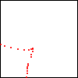
Given that we moved the mouse continuously to produce the above image, the scattering of points reveals that an operating system does not track every single point where the mouse appears. Instead it samples mouse events sufficiently often and tells your program about those sample events. Usually these samples suffice for people’s purposes.
; physical constants: (define WIDTH 100) (define HEIGHT 30) ; graphical constant: (define MT (empty-scene WIDTH HEIGHT)) ; AllKeys is a String. ; interp. the keys pressed since big-bang created the canvas ; AllKeys -> AllKeys (define (main s) (big-bang s [on-key remember] [to-draw show])) ; AllKeys String -> AllKeys ; add ke to ak, the state of the world (check-expect (remember "hello" " ") "hello ") (check-expect (remember "hello " "w") "hello w") (define (remember ak ke) (string-append ak ke)) ; AllKeys -> Image ; render the string as a text and place it into MT (check-expect (show "hel") (overlay (text "hel" 11 "red") MT)) (check-expect (show "mark") (overlay (text "mark" 11 "red") MT)) (define (show ak) (overlay (text ak 11 "red") MT))
Figure 12 is the analogue to figure 11 for key events. The program starts with some basic constant definitions and a data definition that says we are using strings to record the key events we have seen so far. The main function specifies on event handler, namely one for keys. This key event handler, called remember, consumes the key events seen so far and a string that represents the last key pressed; it then appends the latter to the former. As with the previous program, the purpose of this one is to conduct experiments concerning key events.
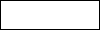
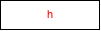
Exercise 41. Look up the "2htdp/image" teachpack and find a way to create framed, left-aligned text. Then change the program in figure 12 so that it uses this combination of image primitives to render its state.
Exercise 42. Run the main function again, press some regular keys on your keyboard, and then try the tab key or the delete—
also known as rubout— key. The result of these actions is an application of the key event handlers to strings such as "\t" and "\r". Appearances are deceiving, however. These strings consists of a single character and remember therefore adds them to the end of the current world state. Read the documentation of on-key to find out which strings belong to KeyEvent; then use a cond expression inside of remember so that it ignores all key strokes represented by one-character strings.
3.8 Virtual Pet Worlds
This exercise section introduces the first two elements of a virtual pet game. It starts with just a display of a cat that keeps walking across the screen. Of course, all the walking makes the cat unhappy and its unhappiness shows. Like all pets, you can try petting, which helps some, or you can try feeding, which helps a lot more.
So let’s start with an image of our favorite cat:
Copy the cat image and paste it into DrRacket, then give the image a name with define.
Exercise 43. Design a “virtual cat” world program that continuously moves the cat from left to right for a specified time period. Make the cat move three pixels per clock tick. Whenever the cat disappears on the right it should re-appear on the left. You may wish to read up on the modulo function.
Exercise 44. Improve the cat animation with a second, slightly different image:
Adjust the rendering function so that it uses one cat image or the other based on whether x coordinate is odd. Read up on odd? in the help desk, and use a cond expression to select cat images.
Exercise 45. Design a world program that maintains and displays a “happiness gauge” over some specified period of time. With each clock tick, happiness decreases by -0.1, starting with 100, the maximum score; it never falls below 0, the minimum happiness score. Every time the down arrow key is pressed, happiness increases by 1/5; every time the up arrow is pressed, happiness jumps by 1/3.
To show the level of happiness, we use a scene with a solid, red rectangle with a black frame. For a happiness level of 0, the red bar should be gone; for a happiness level of 100, the bar should go all the way across the scene.
When you know enough, we will explain how to combine the gauge program with the solution of exercise 43. Then we will be able to help the cat because as long as you ignore it, it becomes less happy. If you pet the cat, it becomes happier. If you feed the cat, it becomes much, much happier. So you can see why you want to know a lot more about designing world programs than these first three chapters can tell you.
4 Intervals, Enumerations, Itemizations
Thus far you have four choices to represent information as data: numbers, strings, images, and Boolean values. For many problems this is enough, but there are many more for which these four collections of data in BSL (or different ones in different programming languages) don’t suffice. Put differently, programming with just the built-in collections of data is often clumsy and therefore error prone.
At a minimum, good programmers must learn to design programs with restrictions on these built-in collections. One way to restrict is to enumerate a bunch of elements from a collection and to say that these are the only ones that are going to be used for some problem. Enumerating elements works only when there is a finite number of them. To accommodate collections with “infinitely” many elements, we introduce intervals, which are collections of elements that satisfy a specific property.
Infinite may just mean “so large that enumerating the elements is entirely impractical.”
Defining enumerations and intervals means distinguishing among different kinds of elements. To distinguish in code requires conditional functions, that is, functions that choose different ways of computing results depending on the value of some argument. Both Many Ways To Compute and Mixing It Up With Booleans illustrate with examples how to write such functions. In both, however, there is no design system; all you have is some new construct in your favorite programming language (that’s BSL) and some examples on how to use it.
In this chapter, we introduce enumerations and intervals and discuss a general design strategy for these forms of input data. We start with a second look at the cond expression. Then we go through three different scenarios of distinct subclasses of data: enumerations, intervals, and itemizations, which mix the first two. The chapter ends with a section on the general design strategy for such situations.
4.1 Conditional Computations
(cond [ConditionExpression1 ResultExpression1] [ConditionExpression2 ResultExpression2] .... [ConditionexpressionN ResultExpressionN])
A cond line is also known as a cond-clause.
(define (next traffic-light-state) (cond [(string=? "red" traffic-light-state) "green"] [(string=? "green" traffic-light-state) "yellow"] [(string=? "yellow" traffic-light-state) "red"]))
A note on pragmatics: Contrast cond expressions with if expressions from Mixing It Up With Booleans. The latter distinguish one situation from all others. As such, if expressions are much less suited for multi-situation contexts; they are best used when all we wish to say is “one or the other.” We therefore always use cond for situations when we wish to remind the reader of our code that some distinct situations come directly from data definitions. For other pieces of code, we use whatever construct is most convenient.
(cond [ConditionExpression1 ResultExpression1] [ConditionExpression2 ResultExpression2] .... [else DefaultResultExpression])
> (cond [(> x 0) 10] [else 20] [(< x 10) 30]) cond: found an else clause that isn't the last clause in its cond expression
| |||||||||||||||||
|
| ||||||||||||||||
4.2 How It Works
Just looking at the cond expression you cannot predict which of the three cond clauses is going to be used. And that is the point of a function. The function deals with many different inputs, for example, 2, 3, 7, 18, 29. For each of these inputs, it may have to proceed in a different manner. Differentiating among the different classes of inputs is the purpose of the cond expression.
(reward 3)
(reward 3) = (cond [(<= 0 3 10) "bronze"] [(and (< 10 3) (<= 3 20)) "silver"] [else "gold"]) = (cond [true "bronze"] [(and (< 10 3) (<= 3 20)) "silver"] [else "gold"]) = "bronze"
(reward 21) = (cond [(<= 0 21 10) "bronze"] [(and (< 10 21) (<= 21 20)) "silver"] [else "gold"]) = (cond [false "bronze"] [(and (< 10 21) (<= 21 20)) "silver"] [else "gold"]) = (cond [(and (< 10 21) (<= 21 20)) "silver"] [else "gold"])
... = (cond [(and (< 10 21) (<= 21 20)) "silver"] [else "gold"]) = (cond [(and true (<= 21 20)) "silver"] [else "gold"]) = (cond [(and true false) "silver"] [else "gold"]) = (cond [false "silver"] [else "gold"]) = (cond [else "gold"]) = "gold"
Exercise 46. Enter the definition of reward and the application (reward 18) into the Definitions area of DrRacket and use the stepper to find out how DrRacket evaluates applications of the function.
Exercise 47. A cond expression is really just an expression and may therefore show up in the middle of another expression:Use the stepper to evaluate the expression for two distinct values of y: 100 and 210.Nesting cond expressions can eliminate common expressions. Recall the following function definition from Prologue: How to Program:
(define (create-rocket-scene.v5 h) (cond [(<= h ROCKET-CENTER-TO-BOTTOM) (place-image ROCKET 50 h MTSCN)] [(> h ROCKET-CENTER-TO-BOTTOM) (place-image ROCKET 50 ROCKET-CENTER-TO-BOTTOM MTSCN)])) As you can see, both branches of the cond expression have the following shape:(place-image ROCKET X ... MTSCN)
4.3 Enumerations
; A MouseEvt is one of these strings: ; – "button-down" ; – "button-up" ; – "drag" ; – "move" ; – "enter" ; – "leave"
; A TrafficLight shows one of three colors: ; – "red" ; – "green" ; – "yellow" ; interp. each element of TrafficLight represents which colored ; bulb is currently turned on
; TrafficLight -> TrafficLight ; given state s, determine the next state of the traffic light (check-expect (traffic-light-next "red") "green") (define (traffic-light-next s) (cond [(string=? "red" s) "green"] [(string=? "green" s) "yellow"] [(string=? "yellow" s) "red"]))
Exercise 48. If you copy and paste the above function definition into the definitions area of DrRacket and click RUN, DrRacket highlights two of the three cond lines. This coloring tells you that your test cases do not cover all possible cases. Add enough tests to make DrRacket happy.
Exercise 49. Design an interactive program that simulates a traffic light for a given duration. The program renders the state of a traffic light as a solid circle of the appropriate color, and it changes state on every clock tick. What is the most appropriate initial state? Ask your engineering friends.
The main idea of an enumeration is that it defines a collection of data as a finite number of pieces of data. Each item explicitly spells out which piece of data belongs to the class of data that we are defining. Usually, the piece of data is just shown as is; on some occasions, the item of an enumeration is an English sentence that describes a finite number of elements of pieces of data with a single phrase.
; A 1String is a string of length 1, ; including " " (the space bar), "\t" (tab), ; "\r" (return), and "\b" (backspace).
(= (string-length s) 1)
; A 1String is one of: ; – "q" ; – "w" ; – "e" ; – "r" ; – "t" ; – "y" ; ...
; A KeyEvent is one of: ; – a single-character string, i.e., a string of length 1 ; – "left" ; – "right" ; – "up" ; – "down" ; – ...
; WorldState KeyEvent -> ... (define (handle-key-events w ke) (cond [(= (string-length ke) 1) ...] [(string=? "left" ke) ...] [(string=? "right" ke) ...] [(string=? "up" ke) ...] [(string=? "down" ke) ...] ...))
; Position is a Number. ; interp. distance between the left margin and the ball ; Position KeyEvent -> Position ; compute the next location of the ball (check-expect (keh 13 "left") 8) (check-expect (keh 13 "right") 18) (check-expect (keh 13 "a") 13)
(define (keh p k) (cond [(= (string-length k) 1) p] [(string=? "left" k) (- p 5)] [(string=? "right" k) (+ p 5)] [else p]))
(define (keh p k) (cond [(string=? "left" k) (- p 5)] [(string=? "right" k) (+ p 5)] [else p]))
When programs rely on data definitions that are defined by a programming language (such as BSL) or its libraries (such as the "universe" teachpack), it is common that they use only a part of the enumeration. To illustrate this point, let us look at a representative problem.
Sample Problem: Design a key-event handler that moves a red dot left or right on a horizontal line in response to pressing the left and right arrow keys.
Figure 13 presents two solutions to this problem. The function on the left is organized according to the basic idea of using one cond clause per line in the data definition of the input, KeyEvent. In contrast, the right-hand side displays a version that uses the three essential lines: two for the keys that matter and one for everything else. The re-ordering is appropriate because only two of the cond-lines are relevant, and they can be cleanly separated from other lines. Naturally, this kind of re-arrangement is done after the function is designed properly.
4.4 Intervals
Sample Problem: Design a program that simulates the descend of a UFO.
; WorldState is a Number ; interp. height of UFO (from top) ; constants: (define WIDTH 300) (define HEIGHT 100) (define CLOSE (/ HEIGHT 3)) ; visual constants: (define MT (empty-scene WIDTH HEIGHT)) (define UFO (overlay (circle 10 "solid" "green") (rectangle 40 2 "solid" "green"))) ; WorldState -> WorldState (define (main y0) (big-bang y0 [on-tick nxt] [to-draw render])) ; WorldState -> WorldState ; compute next location of UFO (check-expect (nxt 11) 14) (define (nxt y) (+ y 3)) ; WorldState -> Image ; place UFO at given height into the center of MT (check-expect (render 11) (place-image UFO (/ WIDTH 2) 11 MT)) (define (render y) (place-image UFO (/ WIDTH 2) y MT))
Sample Problem: Add a status line that says "descending" when the UFO’s height is above one third of the height of the canvas. It switches to "closing in" below that. And finally, when the UFO has reached the bottom of the canvas, the status notifies the player that the UFO has "landed."
In this case, we don’t have a finite enumeration of distinct elements or distinct subclasses of data. After all conceptually the interval between 0 and HEIGHT (for some number greater than 0) contains an infinite number of numbers and a large number of integers. Therefore we use intervals to superimpose some organization on the generic data definition, which just uses "numbers" to describe the class of coordinates.
An interval is a description of a class of (real or rational or integer) numbers via boundaries. The simplest interval has two boundaries: left and right. If the left boundary is to be included in the interval, we say it is a closed on the left. Similarly, a right-closed interval includes its right boundary. Finally, if an interval does not include a boundary, it is said to be open at that boundary.
Pictures of, and notations for, intervals use brackets for closed boundaries and parentheses for open boundaries. Here are four pictures of simple intervals:
[3,5] is a closed interval:
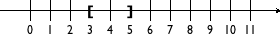
(3,5] is a left-open interval:
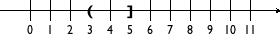
[3,5) is a right-open interval:
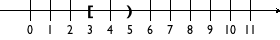
and (3,5) is an open interval:
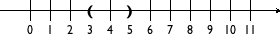
Exercise 50. Determine the integers that each of the four intervals contains.
; constants: (define CLOSE (/ HEIGHT 3)) ; A WorldState falls into one of three intervals: ; – between 0 and CLOSE ; – between CLOSE and HEIGHT ; – below HEIGHT
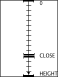
the upper interval goes from 0 to CLOSE;
the middle one starts at CLOSE and reaches HEIGHT; and
the lower, invisible interval is just a single line at HEIGHT.
Visualizing the data definition in this manner helps with the design of functions in many ways. First, it immediately suggests how to pick examples. Clearly we want the function to work inside of all the intervals and we want the function to work properly at the ends of each interval. Second, the image as well as the data definition tell us that we need to formulate a condition that determines whether or not some "point" is within one of the intervals.
Putting the two together also raises a question, namely, how exactly the function deals with the end points. In the context of our example, two points on the number line belong to two intervals: CLOSE belongs to both the upper interval and the middle one, while HEIGHT seems to fall into both the middle one and the lowest one. Such overlaps usually cause problems for programs, and they ought to be avoided.
; WorldState -> WorldState (define (f y) (cond [(<= 0 y CLOSE) ...] [(<= CLOSE y HEIGHT) ...] [(>= y HEIGHT) ...]))
; WorldState -> WorldState (define (g y) (cond [(<= 0 y CLOSE) ...] [(and (< CLOSE y) (<= y HEIGHT)) ...] [(> y HEIGHT) ...]))
; WorldState -> Image ; add a status line to the scene create by render (check-expect (render/status 10) (place-image (text "descending" 11 "green") 10 10 (render 10))) (define (render/status y) (cond [(<= 0 y CLOSE) (place-image (text "descending" 11 "green") 10 10 (render y))] [(and (< CLOSE y) (<= y HEIGHT)) (place-image (text "closing in" 11 "orange") 10 10 (render y))] [(> y HEIGHT) (place-image (text "landed" 11 "red") 10 10 (render y))]))
; WorldState -> WorldState (define (main y0) (big-bang y0 (on-tick nxt) (to-draw render/status)))
Sample Problem: Add a status line, positioned at (20,20), that says "descending" when the UFO’s height is above one third of the height ...
; WorldState -> Image ; add a status line to the scene create by render (check-expect (render/status 42) (place-image (text "descending" 11 "green") 20 20 (render 42))) (define (render/status y) (place-image (cond [(<= 0 y CLOSE) (text "descending" 11 "green")] [(and (< CLOSE y) (<= y HEIGHT)) (text "closing in" 11 "orange")] [(> y HEIGHT) (text "landed" 11 "red")]) 20 20 (render y)))
4.5 Itemizations
An interval distinguishes different subclasses of numbers; an enumeration spells out item for item the useful elements of an existing class of data. Data definitions that use itemizations generalize intervals and enumerations. They allow the combination of any existing data classes (defined elsewhere) with each other and with individual pieces of data.
; A KeyEvent is one of: ; – 1String ; – "left" ; – "right" ; – "up" ; – "down" ; – ...
; string->number : String -> NorF ; converts the given string into a number; ; produces false if impossible
; A NorF is one of: ; – false ; – a Number
; NorF -> Number ; add 3 to the given number; 3 otherwise (check-expect (add3 false) 3) (check-expect (add3 0.12) 3.12) (define (add3 x) (cond [(false? x) 3] [else (+ x 3)]))
Let’s solve a somewhat more purposeful design task:
Sample Problem: Design a program that launches a rocket when the user of your program presses the space bar. The program first displays the rocket sitting at the bottom of the canvas. Once launched, it moves upward at three pixels per clock tick.
; A LR (short for: launching rocket) is one of: ; – "resting" ; – non-negative number ; interp. "resting" represents a rocket on the ground ; a number denotes the height of a rocket in flight
the word “height” could refer to the distance between the ground and the rocket’s point of reference, say, its center; or
it could mean the distance between the top of the canvas and the reference point.
To drive home this choice, exercise 55 below asks you to solve the exercises of this section using the first interpretation of “height.”
Exercise 51. The design recipe for world programs demands that you translate information into data and vice versa to ensure a complete understanding of the data definition. In some way it is best to draw some world scenarios and to represent them with data and, conversely, to pick some data examples and to draw pictures that match them. Do so for the LR definition, including at least HEIGHT and 0 as examples.
In reality, rocket launches come with count-downs:
Sample Problem: Design a program that launches a rocket when the user presses the space bar. At that point, the simulation starts a count-down for three ticks, before it displays the scenery of a rising rocket. The rocket should move upward at a rate of three pixels per clock tick.
Following the design recipe for world programs from Designing World Programs, we first collect constants:
; physical constants (define HEIGHT 300) (define WIDTH 100) (define YDELTA 3) ; graphical constants (define BACKG (empty-scene WIDTH HEIGHT)) (define ROCKET (rectangle 5 30 "solid" "red"))
; LRCD -> Image ; render the state as a resting or flying rocket (define (show x) BACKG) ; LRCD KeyEvent -> LRCD ; start the count-down when space bar is pressed, ; and the rocket is resting (define (launch x ke) x) ; LRCD -> LRCD ; raise the rocket by YDELTA if it is moving already (define (fly x) x)
(check-expect (show "resting") (place-image ROCKET 10 (- HEIGHT (/ (image-height ROCKET) 2)) BACKG)) (check-expect (show -2) (place-image (text "-2" 20 "red") 10 (* 3/4 WIDTH) (place-image ROCKET 10 (- HEIGHT (/ (image-height ROCKET) 2)) BACKG))) (check-expect (show 53) (place-image ROCKET 10 53 BACKG))
(define ROCKET-CENTER (/ (image-height ROCKET) 2))
A second look at the examples reveals that making examples also means making choices. Nothing in the problem statement actually demands how exactly the rocket is displayed before it is launched but doing so is natural. Similarly, nothing says to display a number during the count down, but it adds a nice touch. Last but not least, if you solved exercise 51 you also know that HEIGHT and 0 are special points for the third clause of the data definition.
Clearly, (show -3) and (show -1) must produce images like the one for (show -2). After all, the rocket still rests on the ground, even if the count down numbers differ.
- The case for (show HEIGHT) is different. According to our agreement, HEIGHT represents the state when the rocket has just been launched. Pictorially this means the rocket is still resting on the ground. Based on the last test case above, here is the test case that expresses this insight:
(check-expect (show HEIGHT) (place-image ROCKET 10 HEIGHT BACKG)) Except that if you evaluate the “expected value” expression by itself in DrRacket’s interaction area, you see that the rocket is half-way underground. This shouldn’t be the case of course, meaning we need to adjust this test case and the above:(check-expect (show HEIGHT) (place-image ROCKET 10 (- HEIGHT ROCKET-CENTER) BACKG)) (check-expect (show 53) (place-image ROCKET 10 (- 53 ROCKET-CENTER) BACKG)) Finally, determine the result you now expect from (show 0). It is a simple but revealing exercise.
Exercise 52. Why would it be incorrect to formulate the first condition as (string=? "resting" x)? Conversely, formulate a completely accurate condition, that is, a Boolean expression that evaluates to true precisely when x belongs to the first subclass of LRCD. Similarly, what is a completely accurate condition for the third clause?
(define (show x) (cond [(string? x) (place-image ROCKET 10 (- HEIGHT ROCKET-CENTER) BACKG)] [(<= -3 x -1) (place-image (text (number->string x) 20 "red") 10 (* 3/4 WIDTH) (place-image ROCKET 10 (- HEIGHT ROCKET-CENTER) BACKG))] [(>= x 0) (place-image ROCKET 10 (- x ROCKET-CENTER) BACKG)]))
Stop! Do you notice all the occurrences of 10 in the code? It always refers to the x coordinate of the rocket. So go ahead, create a constant definition for this 10. Now read on.
(place-image ROCKET 10 (- ... ROCKET-CENTER) BACKG)
appears three different times in the function: twice to draw a resting rocket and once to draw a flying rocket. Define an auxiliary function that performs this work and thus shorten show. Why is this a good idea? We discussed this idea in Prologue: How to Program.
(check-expect (launch "resting" " ") -3) (check-expect (launch "resting" "a") "resting") (check-expect (launch -3 " ") -3) (check-expect (launch -1 " ") -1) (check-expect (launch 33 " ") 33) (check-expect (launch 33 "a") 33)
(define (launch x ke) (cond [(string? x) (if (string=? " " ke) -3 x)] [(<= -3 x -1) x] [(>= x 0) x]))
; LRCD -> LRCD ; raise the rocket by YDELTA if it is moving already (check-expect (fly "resting") "resting") (check-expect (fly -3) -2) (check-expect (fly -2) -1) (check-expect (fly -1) HEIGHT) (check-expect (fly 10) (- 10 YDELTA)) (check-expect (fly 22) (- 22 YDELTA)) (define (fly x) (cond [(string? x) x] [(<= -3 x -1) (if (= x -1) HEIGHT (+ x 1))] [(>= x 0) (- x YDELTA)]))
The design of fly—
Exercise 54. Define main2 so that you can launch the rocket and watch it lift off. Read up on the on-tick clause to determine the length of one tick and how to change it.
If you watch the entire launch, you will notice that once the rocket reaches the top, something curious happens. Explain. Add a stop-when clause to main2 so that the simulation of the lift-off stops gracefully when the rocket is out of sight.
In solving exercise 54 you now have a complete, working program but one that behaves a bit strangely. Experienced programmers tell you that using negative numbers to represent the count-down phase is too “brittle.” The next chapter introduces the means to provide a good data definition for this problem. Before we go there, however, let us reiterate in the following section how to design programs that consume data described by itemizations.
Exercise 55. Recall that the word “height” forced us to choose one of two possible interpretation. Now that you have solved the exercises in this section, solve them again using the first interpretation of the word. Compare and contrast the solutions.
4.6 Designing With Itemizations
What the preceding three sections have clarified is that the design of functions can and must exploit the organization of the data definition. Specifically, if a data definition singles out certain pieces of data or specifies ranges of data, then the creation of examples and the organization of the function reflects these cases and ranges.
Sample Problem: The state of Tax Land has created a three-stage sales tax to cope with its budget deficit. Inexpensive items, those costing less than $1,000, are not taxed. Luxury items, with a price of more than $10,000, are taxed at the rate of eight percent (8.00%). Everything in between comes with a five percent (5.25%) price tag.
Design a function for a cash register that computes the sales tax for each item. That is, design a function that, given the price of an item, computes the amount of tax to be charged.
When the problem statement distinguishes different classes of input information, you need carefully formulated data definitions.
A data definition should explicitly enumerate different subclasses of data or in some cases just individual pieces of data. Each of those subclasses represents a subclass of information. The key is that each subclass of data is distinct from every other class so that our function can distinguish the subclasses, too.
Our sample problem deals with prices and taxes, which are usually positive numbers. It also clearly distinguishes three ranges of positive numbers:; A Price falls into one of three intervals: ; — 0 through 1000; ; — 1000 through 10000; ; — 10000 and above. Make sure you understand how these three ranges relate to the original problem.As far as the signature, purpose statement, and function header are concerned, you proceed as before.
Here is the material for our running example:For functional examples, however, it is imperative that you pick at least one example from each subclass in the data definition. Also, if a subclass is a finite range, be sure to pick examples from the boundaries of the range and from its interior.
Since our sample data definition involves three distinct intervals, let us pick all boundary examples and one price from inside each interval and determine the amount of tax for each: 0, 537, 1000, 1282, 10000, and 12017.
Stop! Before you read on, try to calculate the tax for each of these prices.
Here is our first attempt:0.00
537.00
1000.00
1282.00
10000.00
12017.00
0.00
0.00
???
64.10
???
961.36
The question marks point out that the problem statement uses the somewhat vague phrase “those costing less than $1,000” and “more than $10,000” to specify the tax table. While a programmer may immediately jump to the conclusion that these words mean “strictly less” or “strictly more,” the lawmakers may have meant to say “less or equal” or “more or equal,” respectively. Being skeptical, we decide here that Tax Land legislators always want more money to spend, so the tax rate for $1,000 is 5% and the rate for $10,000 is 8%. A programmer in a tax company would have to ask the tax-law specialist in the company.Now that we have figured out how the boundaries are supposed to be interpreted in the domain, we should refine the data definition. We trust you can do this on your own.
Before we go, let us turn some of the examples into test cases:(check-expect (sales-tax 537) 0) (check-expect (sales-tax 1000) (* 0.05 1000)) (check-expect (sales-tax 12017) (* 0.08 12017)) Take a close look. Instead of just writing down the expected result, we write down how to compute the expected result. This makes it easier later to formulate the function definition.Stop! Write down the remaining test cases. Think about why you may need more test cases than subclasses in the data definition.
- The biggest novelty is the conditional template. In general,
the template mirrors the organization of subclasses with a cond.
This slogan means two concrete things. First, the function’s body must be a conditional expression with as many clauses as there are distinct subclasses in the data definition. If the data definition mentions three distinct subclasses of input data, you need three cond clauses; if it has seventeen subclasses, the cond expression contains seventeen clauses. Second, you must formulate one condition expression per cond clause. Each expression involves the function parameter and identifies one of the subclasses of data in the data definition. When you have finished the template, you are ready to define the function. Given that the function body already contains a schematic cond expression, it is natural to start from the various cond lines. For each cond line, you may assume that the input parameter meets the condition and you exploit the corresponding test cases. To formulate the corresponding result expression, you write down the computation for this example as an expression that involves the function parameter. Ignore all other possible kinds of input data when you work on one line; the other cond clauses take care of those.
; Price -> Number ; compute the amount of tax charged for price p (define (sales-tax p) (cond [(and (<= 0 p) (< p 1000)) 0] [(and (<= p 1000) (< p 10000)) (* 0.05 p)] [(>= p 10000) (* 0.08 p)])) Finally, you run the tests and make sure that the tests cover all cond clauses.
What do you do when one of your test cases fails? Review at the end of Designing Functions concerning test failures.
Exercise 56. Introduce constant definitions that separate the intervals for low prices and luxury prices from the others so that the legislator in Tax Land can easily raise the taxes even more.
4.7 A Bit More About Worlds
Let us exploit our knowledge to create a world that simulates a basic US traffic light. When the light is green and it is time to stop the traffic, the light turns yellow and after that turns red. When the light is red and it is time to get the traffic going, the light switches to green.
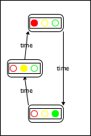
Figure 16 summarizes this description as a state transition diagram. Such a diagram consists of states and arrows that connect these states. Each state depicts a traffic light in one particular configuration: red, yellow, or green. Each arrow shows how the world can change, from which state it can transition to another state. Our sample diagram contains three arrows, because there are three possible ways in which the traffic light can change. Labels on the arrows indicate the reason for changes; a traffic light transitions from one state to another as time passes.
In many situations, state transition diagrams have only a finite number of states and arrows. Computer scientists call such diagrams finite state machines or automata, for short: FSA. While FSAs look simple at first glance, they play an important role in computer science.
To create a world program for an FSA, we must first pick a data
representation for the possible “states of the world,” which, according
to Designing World Programs, represents those aspects
of the world that may change in some ways as opposed to those that remain
the same. In the case of our traffic light, what changes is the color of
the light, that is, which bulb is turned on. The size of the bulbs, their
arrangement (horizontal or vertical), and other aspects don’t
change. Since there are only three states—
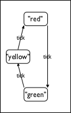
Figure 17 shows how to interpret the three elements of TrafficLight. Like the original figure, it consists of three states, arranged in such a way that it is easy to interpret each data element as a representation of a concrete configuration and to represent any such configuration as a piece of data. Also, the arrows are now labeled with tick to suggest that our world program uses the passing of time as the trigger that changes the state of the traffic light. Alternatively, we could use keystrokes or mouse events to switch the light, which would be especially appropriate if we wanted to simulate the manual operation of a traffic light.
; TrafficLight -> TrafficLight ; determine the next state of the traffic light, given current-state (define (tl-next current-state) current-state) ; TrafficLight -> Image ; render the current state of the traffic light as a image (define (tl-render current-state) (empty-scene 100 30))
Exercise 57. Finish the design of a world program that simulates the traffic light FSA. Here is the main function:
; TrafficLight -> TrafficLight ; simulate a traffic light that changes with each tick (define (traffic-light-simulation initial-state) (big-bang initial-state [to-draw tl-render] [on-tick tl-next 1])) The function uses as its argument the initial state for the big-bang expression. It tells DrRacket to re-draw the state of the world with tl-render and to react to clock ticks with tl-next. Also note it informs the computer that the clock should tick once per second (how?).In short, you have two design tasks to complete: tl-render and tl-design.
Hint 1: Create a DrRacket buffer that includes the data definition for TrafficLight and the function definitions of tl-next and tl-render.
For the design of the latter, we include some test cases:
(check-expect (tl-render "red") ) (check-expect (tl-render "yellow") ) (check-expect (tl-render "green") ) Hint 2: We started from the following graphical constants:and introduced additional constants for the diameter, the width, the height, and so forth. You may find this auxiliary function helpful:
; TrafficLight TrafficLight -> Image ; render the c colored bulb of the traffic light, ; when on is the current state (define (bulb on c) (if (light=? on c) (circle RAD "solid" c) (circle RAD "outline" c))) Hint 3: Look up the image primitive place-image; it simplifies the task quite a bit.
Here is another finite-state problem that introduces a few additional complications:
Sample Problem: Design a world program that simulates the working of a door with an automatic door closer. If this kind of door is locked, you can unlock it with a key. An unlocked door is closed but someone pushing at the door opens it. Once the person has passed through the door and lets go, the automatic door takes over and closes the door again. When a door is closed, it can be locked again.
To tease out the essential elements, we again draw a transition diagram; see the left-hand side of the figure. Like the traffic light, the door has three distinct states: locked, closed, and open. Locking and unlocking are the activities that cause the door to transition from the locked to the closed state and vice versa. As for opening an unlocked door, we say that one needs to push the door open. The remaining transition is unlike the others, because it doesn’t require any activities by anyone or anything else. Instead, the door closes automatically over time. The corresponding transition arrow is labeled with *time* to emphasize this.
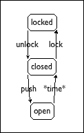 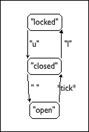
Figure 18: A transition diagram for a door with an automatic closer
The next step of a world design demands that we translate the actions in
our domain—
door-closer, which closes the door during one tick;
door-actions, which manipulates the door in response to pressing a key; and
door-render, which translates the current state of the door into an image.
; DoorState -> DoorState ; closes an open door over the period of one tick (define (door-closer state-of-door) state-of-door)
given state | desired state |
"locked" | "locked" |
"closed" | "closed" |
"open" | "closed" |
(check-expect (door-closer "locked") "locked") (check-expect (door-closer "closed") "closed") (check-expect (door-closer "open") "closed")
(define (door-closer state-of-door) (cond [(string=? "locked" state-of-door) ...] [(string=? "closed" state-of-door) ...] [(string=? "open" state-of-door) ...]))
(define (door-closer state-of-door) (cond [(string=? "locked" state-of-door) "locked"] [(string=? "closed" state-of-door) "closed"] [(string=? "open" state-of-door) "closed"]))
The second function, door-actions, takes care of the remaining three arrows of the diagram. Functions that deal with keyboard events consume both a world and a key event, meaning the signature is as follows:
; DoorState KeyEvent -> DoorState ; three key events simulate actions on the door (define (door-actions s k) s)
given state | "locked" | "closed" | "closed" | "open" |
given key event | "u" | "l" | " " | — |
desired state | "closed" | "locked" | "open" | "open" |
(check-expect (door-actions "locked" "u") "closed") (check-expect (door-actions "closed" "l") "locked") (check-expect (door-actions "closed" " ") "open") (check-expect (door-actions "open" "a") "open") (check-expect (door-actions "closed" "a") "closed") (define (door-actions s k) (cond [(and (string=? "locked" s) (string=? "u" k)) "closed"] [(and (string=? "closed" s) (string=? "l" k)) "locked"] [(and (string=? "closed" s) (string=? " " k)) "open"] [else s]))
; DoorState -> Image ; translate the current state of the door into a large text (check-expect (door-render "closed") (text "closed" 40 "red")) (define (door-render s) (text s 40 "red"))
; DoorState -> DoorState ; simulate a door with an automatic door closer (define (door-simulation initial-state) (big-bang initial-state (on-tick door-closer) (on-key door-actions) (to-draw door-render)))
Exercise 58. During a door simulation the “open” state is barely visible. Modify door-simulation so that the clock ticks once every three seconds. Re-run the simulation.
; A DoorState is one of: ; – "locked" ; – "closed" ; – "open" ; — — — — — — — — — — — — — — — — — — — — — — — — — — ; DoorState -> DoorState ; closes an open door over the period of one tick (check-expect (door-closer "locked") "locked") (check-expect (door-closer "closed") "closed") (check-expect (door-closer "open") "closed") (define (door-closer state-of-door) (cond [(string=? "locked" state-of-door) "locked"] [(string=? "closed" state-of-door) "closed"] [(string=? "open" state-of-door) "closed"])) ; — — — — — — — — — — — — — — — — — — — — — — — — — — ; DoorState KeyEvent -> DoorState ; three key events simulate actions on the door (check-expect (door-actions "locked" "u") "closed") (check-expect (door-actions "closed" "l") "locked") (check-expect (door-actions "closed" " ") "open") (check-expect (door-actions "open" "a") "open") (check-expect (door-actions "closed" "a") "closed") (define (door-actions s k) (cond [(and (string=? "locked" s) (string=? "u" k)) "closed"] [(and (string=? "closed" s) (string=? "l" k)) "locked"] [(and (string=? "closed" s) (string=? " " k)) "open"] [else s])) ; — — — — — — — — — — — — — — — — — — — — — — — — — — ; DoorState -> Image ; the current state of the door as a large red text (check-expect (door-render "closed") (text "closed" 40 "red")) (define (door-render s) (text s 40 "red")) ; — — — — — — — — — — — — — — — — — — — — — — — — — — ; DoorState -> DoorState ; simulate a door with an automatic door closer (define (door-simulation initial-state) (big-bang initial-state (on-tick door-closer) (on-key door-actions) (to-draw door-render)))
5 Adding Structure
Well, we could play some mathematical tricks that would “merge” two numbers into a single number in such a way that we could later extract them again. While these tricks are well-known to trained computer scientists, it should be clear to every budding programmer that such coding tricks obscure the true intentions behind a program. We therefore don’t play this kind of game. Suppose you want to design a world program that simulates a ball bouncing back and forth between two of the four walls. For simplicity, assume that it always moves two pixels per clock tick. If you follow the design recipe, your first focus is to form a data representation for what changes over time. A bouncing ball with constant speed has two always-changing properties: the location of the ball and the direction of its movement. The problem is that the "universe" teachpack keeps track of only one value, and so the question arises how one piece of data can represent two changing quantities of information.
Here is another scenario that raises the same question. Your cell phone is mostly a few million lines of software with some plastic attached to them. Among other things, it administrates your list of contacts. Before we even consider a representation for your ever-growing list of phone numbers and friends, let us ponder the question of how to represent the information about a single contact, assuming each contact comes with a name, a phone number, and an email address. Especially in a context where you have lots and lots of contacts, it is important to glue together all the information that belongs to one contact; otherwise the various pieces could get scrambled by accident.
Every programming language provides some mechanism for combining several
pieces of data into one piece and for retrieving the constituent
values. BSL is no exception; it offers structure type definitions
as the fundamental mechanism for combining several values into one. In
general, a structure type definition introduces many different functions
into the available vocabulary, including one that creates structure
instances—
5.1 Structures
You may have encountered Cartesian points in your mathematics courses in school. They are closely related though their y coordinates mean something slightly different than the y coordinates of posns. A First Look: A location on a world canvas is uniquely identified by two pieces of data: the distance from the left margin and the distance from the top margin. The first is called an x-coordinate and the second one is the y-coordinate.
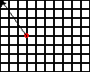
(check-expect (distance-to-0 (make-posn 0 5)) 5) (check-expect (distance-to-0 (make-posn 7 0)) 7)
(check-expect (distance-to-0 (make-posn 3 4)) 5) (check-expect (distance-to-0 (make-posn 8 6)) 10) (check-expect (distance-to-0 (make-posn 5 12)) 13)
Next we can turn our attention to the definition of the function. The examples imply that the design of distance-to-0 doesn’t need to distinguish between different situations. Still, we are stuck because distance-to-0 has a single parameter that represents the entire pixel but we need the two coordinates to compute the distance. Put differently, we know how to combine two numbers into a posn structure using make-posn but we don’t know how to extract these numbers from a posn structure.
An alternative terminology is “to access the fields of a record.” We prefer to think of structures as containers from which we can extract other values. BSL provides operations for extracting values from structures. For posn structures, there are two such operations, one per coordinate: posn-x and posn-y. The former operation extracts the x coordinate; the latter extracts the y coordinate.
The function squares (posn-x a-posn) and (posn-y a-posn), which represent the x and y coordinates, sums up the results, and takes the square root. With DrRacket, we can also quickly check that our new function produces the proper results for our examples.
by hand. Show all steps. Assume that sqr performs its computation in a single step. Check the results with DrRacket’s stepper.
Exercise 60. The Manhattan distance of a point to the origin considers a path that follows a rectangular grid, like those rigid blocks in Manhattan.
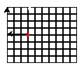
When placed in such a context, one cannot walk a straight path from a point to the origin; instead a person must follow the grid pattern. For a point such as (3,4), a local resident might say “go three blocks this way, turn right, and then go four blocks straight” to provide directions to get to the origin of the grid.
Design the function manhattan-distance, which measures the Manhattan distance of the given posn structure to the origin.
Defining a Structure: Unlike numbers or Boolean values, structures such as posn usually don’t come with a programming language. Only the mechanism to define structure types is provided; the rest is left up to the programmer. This is also true for BSL.
(define-struct posn (x y))
(define-struct StructureName (FieldName ... FieldName))
one constructor, a function that creates structure instances from as many values as there are fields; as mentioned, structure is short for structure instance. The phrase structure type is a generic name for the collection of all possible instances.
one selector per field, which extracts the value of the field from a structure instance; and
one structure predicate, which like ordinary predicates distinguishes instances from all other kinds of values.
One curious aspect of structure type definitions is that it makes up names for the various new operations it creates. Specifically, for the name of the constructor, it prefixes the structure name with “make-” and for the names of the selectors it postfixes the structure name with the field names. Finally, the predicate is just the structure name with “?” added; we pronounce this question mark as “huh” when we read program fragments aloud.
(define-struct entry (name phone email))
the constructor make-entry, which consumes three values and creates an instance of entry;
the selectors entry-name, entry-phone, and entry-email, which all consume one value—
an instance of entry— and produces a value; and the predicate entry?.
(make-entry "Sarah Lee" "666-7771" "lee@classy-university.edu")
(make-entry "Tara Harper" "666-7770" "harper@small-college.edu")
(define pl (make-entry "Sarah Lee" "666-7771" "lee@classy-university.edu")) (define bh (make-entry "Tara Harper" "666-7770" "harper@small-college.edu"))
> (entry-name pl) "Sarah Lee"
> (entry-name bh) "Tara Harper"
> (entry-name (make-posn 42 5)) entry-name: expects an entry, given (posn 42 5)
> (entry-email pl) "lee@classy-university.edu"
> (entry-phone pl) "666-7771"
Exercise 61. Write down the names of the functions (constructors, selectors, and predicates) that the following structure type definitions define:
(define-struct movie (title producer year))
(define-struct boyfriend (name hair eyes phone))
(define-struct cheerleader (name number))
(define-struct CD (artist title price))
(define-struct sweater (material size producer))
Make sensible guesses as to what kind of values go with which fields and create at least one instance per structure type definition. Then draw box representations for each of them.
A positive number means the ball moves in one direction.
A negative number means it moves in the opposite direction.
(define-struct ball (location velocity))
(define SPEED 3) (define-struct balld (location direction)) (make-balld 10 'up) Interpret this program fragment in terms of a “world scenario” and then create other instances of balld.
Objects in games and simulations don’t always move along vertical or horizontal lines. They move in some “oblique” manner across the screen. Describing both the location and the velocity of a ball moving across a 2-dimensional world canvas demands two numbers: one per direction. For the location part, the two numbers represent the x and y coordinates. Velocity describes the changes in the x and y direction; in other words, these “change numbers” must be added to the respective coordinates to find out where the object is next.
(define-struct vel (deltax deltay))
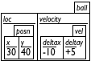
> (ball-velocity ball1) (vel ...)
> (vel-deltax (ball-velocity ball1)) -10
> (posn-x (ball-velocity ball1)) posn-x: expects a posn, given (vel ...)
(define-struct ballf (x y deltax deltay))
Create an instance of ballf that is interpreted in the same way as ball1.
(define-struct centry (name home office cell)) (define-struct phone (area number)) (make-centry "Shriram Fisler" (make-phone 207 "363-2421") (make-phone 101 "776-1099") (make-phone 208 "112-9981"))
In sum, nesting information is natural. The best way to represent such information with data is to mirror the nesting with nested structure instances. Doing so makes it easy to interpret the data in the application domain of the program, and it is also straightforward to go from examples of information to data. Of course, it is really the task of data definitions to facilitates this task of going back and forth between information and data. We have not written data definitions so far, but we are going to catch up with this in the next section.
Data in Structures: Until now, data definitions have been rather boring. We have either used built-in collections of data to represent information (numbers, Boolean values, strings) or specified an itemization (interval or enumeration), which restricts an existing collection. The introduction of structures adds complexity to our data definitions.
(define-struct posn (x y)) ; A Posn is a structure: (make-posn Number Number) ; interp. the number of pixels from left and from top
(define-struct entry (name phone email)) ; An Entry is a structure: (make-entry String String String) ; interp. name, 7-digit phone number, and email address of a contact
(define-struct ball (location velocity)) ; A Ball-1d is a structure: (make-ball Number Number) ; interp. 1: the position from top and the velocity ; interp. 2: the position from left and the velocity
; A Ball-2d is a structure: (make-ball Posn Vel) ; interp. 2-dimensional position with a 2-dimensional velocity (define-struct vel (deltax deltay)) ; A Vel is a structure: (make-vel Number Number) ; interp. velocity in number of pixels per clock tick for each direction
Note also that Ball-2d refers to another one of our data definitions, namely, the one for Vel. While all other data definitions have thus far referred to built-in data collections (numbers, Boolean values, strings), it is perfectly acceptable and indeed common that one of your data definition refers to another. Later, when you design programs, such connections provide some guidance for the organization of programs.
The question of what data definitions really mean and is the topic of the next section.
Of course, at this point, it should really raise the question of what data definitions really mean and this is what the next section deals with.
Exercise 64. Formulate a data definition for the above phone structure type definition that accommodates the given examples.
Next formulate a data definition for phone numbers using this structure type definition:(define-struct phone# (area switch phone))
Historically, the first three digits make up the area code, the next three the code for the phone switch (exchange) of your neighborhood, and the last four represent the phone with respect to the neighborhood. Describe the content of the three fields as precisely as possible with intervals.
5.2 Programming With Structures
Structures defines distance-to-0, a function that consumed a structure and produced a number. Now we look at a few more such functions before formulating some general principles in the next section.
Sample Problem: Your team is designing a program that keeps track of the last mouse click on a 100 x 100 canvas. Together you chose Posn as the data representation for the x and y coordinates of the mouse click. Design a function that consumes a mouse click and a 100 x 100 scene and adds a circular red spot to the scene where the click occurred.
; visual constants (define MTS (empty-scene 100 100)) (define DOT (circle 3 "solid" "red")) ; Posn Image -> Image ; adds a red spot to s at p (define (scene+dot p s) s)
(check-expect (scene+dot (make-posn 10 20) MTS) (place-image DOT 10 20 MTS)) (check-expect (scene+dot (make-posn 88 73) (rectangle 100 100 "solid" "blue")) (place-image DOT 88 73 (rectangle 100 100 "solid" "blue")))
(define (scene+dot p s) (place-image DOT (posn-x p) (posn-y p) s))
; visual constants (define MTS (empty-scene 100 100)) (define DOT (circle 3 "solid" "red")) ; Posn Image -> Image ; adds a red spot to s at p (check-expect (scene+dot (make-posn 10 20) MTS) (place-image DOT 10 20 MTS)) (check-expect (scene+dot (make-posn 88 73) MTS) (place-image DOT 88 73 MTS)) (define (scene+dot p s) (place-image DOT (posn-x p) (posn-y p) s))
Sample Problem: Design the function x+ and y-. The former consumes a Posn and increases the x coordinate by 3; the latter consumes a Posn and decreases the y coordinate by 3.
; Posn -> Posn ; increase the x coordinate of p by 3 (check-expect (x+ (make-posn 10 0)) (make-posn 13 0)) (define (x+ p) (... (posn-x p) ... (posn-y p) ...))
; Posn -> Posn ; increase the x coordinate of p by 3 (check-expect (x+ (make-posn 10 0)) (make-posn 13 0)) (define (x+ p) (make-posn (+ (posn-x p) 3) (posn-y p)))
Sample Problem: Design the function posn-up-x, which consumes a Posn p and a Number n. It produces a Posn like p with n in the x field.
; Posn Number -> Posn ; update p's x coordinate with n (check-expect (posn-up-x (make-posn -10 22) 100) (make-posn 100 22)) (define (posn-up-x p n) (make-posn n (posn-y p)))
; Posn -> Posn ; increase the x coordinate of p by 3 ; version2 (check-expect (x+ (make-posn 10 0)) (make-posn 13 0)) (define (x+ p) (posn-up-x p (+ (posn-x p) 3)))
When you are given a location and a velocity (change in location per time unit), you can find out the location after one time unit by adding the velocity to the location.
Sample Problem: Your team is designing a game program that keeps track of an object that moves across the canvas at changing speed. The chosen data representation is a structure that contains two Posns:
(define-struct velocity (dx dy)) ; A Velocity is a structure: (make-vel Number Number) ; interp. (make-vel a b) means that the object moves a steps ; along the horizontal and b steps along the vertical per tick (define-struct ufo (loc vel)) ; A UFO is a structure: (make-ufo Posn Velocity) ; interp. (make-ufo p v) is at location p ; moving at velocity v Design the function move1, which moves some given UFO for one tick of the clock.
(define v1 (make-velocity 8 -3)) (define v2 (make-velocity -5 -3)) (define p1 (make-posn 22 80)) (define p2 (make-posn 30 77)) (define u1 (make-ufo p1 v1)) (define u2 (make-ufo p1 v2)) (define u3 (make-ufo p2 v1)) (define u4 (make-ufo p2 v2))
; UFO -> UFO ; move the ufo u, i.e., compute its new location in one clock ; tick from now and leave the velocity as is (check-expect (ufo-move u1) u3) (check-expect (ufo-move u2) (make-ufo (make-posn 17 77) v2)) (define (ufo-move u) u)
... (posn-x (ufo-loc u)) ... (posn-y (ufo-loc u)) ... ... (velocity-dx (ufo-vel u)) ... (velocity-dy (ufo-vel u)) ...
(define (ufo-move u) (make-ufo (posn+ (ufo-loc u) (ufo-vel u)) (ufo-vel u)))
(check-expect (posn+ p1 v1) p2) (check-expect (posn+ p1 v2) (make-posn 17 77))
(define (posn+ p v) (... (posn-x p) ... (posn-y p) ... ... (velocity-dx v) ... (velocity-dy v) ...))
Try it out. Enter these definitions and their test cases into the definitions area of DrRacket and make sure they work. It is the first time that we made a “wish” and you need to make sure you understand how the two functions work together.
5.3 The Universe Of Data
In mathematics such collections are called sets. Every language comes with a universe of data. This data represents information from and about the external world; it is what programs manipulate.This universe of data is a collection that consists of collections of built-in data but also of classes of data that programs create.
Figure 21 shows one way to imagine the universe of BSL. Since there are an infinitely many numbers and strings, the collection of all data is infinite. We indicate “infinity” in the figure with “...” but a real definition would have to avoid this imprecision.
Neither programs nor individual functions in programs deal with the entire universe of data. It is the purpose of a data definition to describe parts of this universe and to name these parts so that we can refer to them concisely. Put differently, a named data definition is a description of a collection of data, and that name is usable in other data definitions and in function signatures. In a function signature, the name specifies what data a function will deal with and, implicitly, which part of the universe of data it won’t deal with.
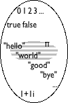
; A BS is one of: ; — "hello", ; — "world", or ; — pi.
The introduction of structure types creates an entirely new picture. When a programmer defines a structure type, the universe expands with all possible structure instances. For example, the addition of a posn structure type means that instances of posn with all possible values in the two fields appear. The middle bubble in figure 23 depicts the addition of those values, showing things such as (make-posn "hello" 0) and even (make-posn (make-posn 0 1) 2). And yes, even though some of these instances of posn make no sense to us, it is indeed possible to construct all of them in a BSL program.
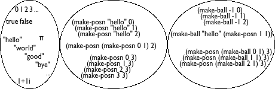
(define-struct ball (location velocity))
> (make-posn (make-ball "hello" 1) false) (posn (ball "hello" 1) false)
> (make-posn (make-ball (make-ball (make-posn 1 2) 3) 4) 5) (posn (ball (ball (posn 1 2) 3) 4) 5)
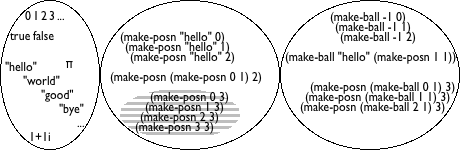
In mathematics and physics courses, you encounter one such kind of data: Cartesian coordinates, which also combine two numbers into one item. As far as the pragmatics of data definitions is concerned, a data definition for structure types describes large collections of data via combinations of existing data definitions with instances. When we write
(define-struct movie (title producer year))
(define-struct boyfriend (name hair eyes phone))
(define-struct cheerleader (name number))
(define-struct CD (artist title price))
(define-struct sweater (material size producer))
Make sensible assumptions as to what kind of values go into each field.
Exercise 66. Provide a structure type definition and a data definition for representing points in time since midnight. A point in time consists of three numbers: hours, minutes, and seconds.
Exercise 67. Provide a structure type definition and a data definition for representing lower-case three-letter words. A word consists of letters, represented with the one-letter strings "a" through "z".
Programmers not only write data definitions, they also read them in order to understand programs, to eliminate errors, to expand the kind of data it can deal with, and so on. We read a data definition to understand how to create data that belongs to the designated collection and to determine whether some piece of data belongs to some specified class.
for a built-in collection of data (number, string, Boolean, images), choose your favorite examples;
Note: on occasion, people use descriptive names to qualify built-in data collections, such as NegativeNumber or OneLetterString. They are no replacement for a well-written data definition.
for an enumeration, use several of the items of the enumeration;
for intervals, use the end points (if they are included) and at least one interior point;
for itemizations, deal with each part separately; and
for data definitions for structures, follow the natural language description, that is, use the constructor and pick an example from the data collection named for each field.
; A Color is one of: ; — "white" ; — "yellow" ; — "orange" ; — "green" ; — "red" ; — "blue" ; — "black" Note: DrRacket recognizes many more strings as colors.
; H (a “happiness scale value”) is a number in [0,100], i.e., ; a number between 0 and 100
(define-struct person (fstname lstname male?)) ; Person is (make-person String String Boolean) Is it a good idea to use a field name that looks like the name of a predicate?
(define-struct dog (owner name age happiness)) ; Dog is (make-dog Person String PositiveInteger H) Add an interpretation to this data definition, too.
; Weapon is one of: ; — false ; — Posn ; interp. false means the missile hasn't been fired yet; ; an instance of Posn means the missile is in flight The last definition is an unusual itemization, using both built-in data and a structure type definition. The next chapter deals with this kind of data definition in depth.
5.4 Designing With Structures
The introduction of structure types reinforces that the process of creating functions has (at least) six steps, something already discussed in Designing With Itemizations. It no longer suffices to rely on built-in data collections to represent information; it is now clear that programmers must create data definitions for all but the simplest problems.
Sample Problem: Design a function that computes the distance of objects in a 3-dimensional space to the origin of the coordinate system.
When a problem calls for the representation of pieces of information that belong together or describe a natural whole, you need a structure type definition. It requires as many fields as there are relevant properties. An instance of this structure type corresponds to the whole, and the values in the fields to its attributes.
A data definition for a structure type introduces a name for the collection of instances that are legitimate. Furthermore it must describe which kind of data goes with which field. Use only names of built-in data collections or previously defined data definitions.
In the end, we (and others) must be able to use the data definition to create sample structure instances. Otherwise, something is wrong with our data definition. To ensure that we can create instances, our data definitions should come with one data examples.
Here is how we apply this idea to the sample problem:(define-struct r3 (x y z)) ; R3 is (make-r3 Number Number Number) (define ex1 (make-r3 1 2 13)) (define ex2 (make-r3 -1 0 3)) The structure type definition introduces a new kind of structure, r3, and the data definition introduces R3 as the name for all instances of r3 that contain only numbers.You still need a signature, a purpose statement, and a function header but there is nothing new here. We leave it to you to apply this idea to the sample problem.
Use the examples from the first step to create functional examples. For each field associated with intervals or enumerations, make sure to pick end points and intermediate points to create functional examples. We expect you to continue working on the sample problem.
A function that consumes structures usually—
though not always— extracts the values from the various fields in the structure. To remind yourself of this possibility, write templates for such functions containing a selector for each field. Furthermore, you may want to write down next to each selector expression what kind of data it extracts from the given structure; this information is found in the data definition. Do not create selector expressions if a field value is itself a structure. It is better to wish for an auxiliary function that processes the extracted field values.
Here is what we have so far for the sample problem, including the template:Use the selector expressions from the template when you finally define the function, keeping in mind that you may not need (some of) them.
Test. Test as soon as the function header is written. Test until all expressions have been covered. And test again when you make changes.
Exercise 69. Create templates for functions that consume instances of the following structure types:
(define-struct movie (title director year))
(define-struct boyfriend (name hair eyes phone))
(define-struct cheerleader (name number))
(define-struct CD (artist title price))
(define-struct sweater (material size color))
No, you do not need data definitions for this task.
Exercise 70. Design the function time->seconds, which consumes instances of the time structures developed in exercise 66 and produces the number of seconds that have passed since midnight. For example, if you are representing 12 hours, 30 minutes, and 2 seconds with one of these structures and if you then apply time->seconds to this instance, the correct result is 45002.
Exercise 71. Design the function different. It consumes two (representations of) three-letter words and creates a word from the differences. For each position in the words, it uses the letter from the second word if the two are the same; otherwise it uses the marker "*". Note: The problem statement mentions two different tasks: one concerning words and one concerning letters. This suggests that you design two functions.
5.5 Structure In the World
When a world program must track two different and independent pieces of information, we must use a collection of structures to represent the world state data. One field keeps track of one piece of information and the other field the second piece of information. Naturally, if the domain world contains more than two independent pieces of information, the structure type definition must specify as many fields as there are distinct pieces of information.
(define-struct space-game (ufo tank))
Every time we say piece of information, we don’t necessarily mean a single number or a single word. A piece of information may itself combine several components. Thus, creating a data representation for world states that consist of two (or more) complex pieces of information leads to nested structures.
; SpaceGame is (make-space-game Posn Number). ; interp. (make-space-game (make-posn ux uy) tx) means that the ; UFO is currently at (ux,uy) and the tank's x coordinate is tx
Understanding what kind of data representations is needed for world programs takes practice. To this end, the following two sections introduce several reasonably complex problem statements. We recommend you solve them before moving on to the kind of games that you might like to design on your own.
5.6 A Graphical Editor
One step of the programming process is to create a text document. To
program in BSL, you open DrRacket, type on the keyboard, and watch text
appear. Pressing the left arrow on the keyboard moves the cursor to the
left; pressing the backspace (or delete) key erases a single letter to the
left of the cursor—
This process is called “editing” though its precise name should be “text editing of programs” because we will use “editing” for a more demanding task than typing on a keyboard. When you write and revise other kinds of documents, say, an English assignment, you are likely to use other software applications, called word processors, though computer scientists dub all of them editor or even graphical editor.
You are now in a position to design a world program that acts as a one-line editor for plain text. Editing here includes entering letters and somehow changing the already existing text, including the deletion and the insertion of letters. This implies some notion of position within the text. People call this position a cursor; most graphical editors display it in such a way that it can easily be spotted.
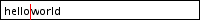
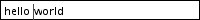
the text entered so far
the current location of the cursor.
(define-struct editor (pre post)) ; Editor = (make-editor String String) ; interp. (make-editor s t) means the text in the editor is ; (string-append s t) with the cursor displayed between s and t
Exercise 72. Design the function render, which consumes an Editor and produces an image.
The purpose of the function is to render the text within an empty scene of 200 x 20 pixels. For the cursor, use a 1 x 20 red rectangle and for the strings, black text of size 11.
Develop the image for a sample string in DrRacket’s interaction area. We started with this expression:
(overlay/align "left" "center" (text "hello world" 11 'black) (empty-scene 200 20)) When you are happy with the looks of the image, use the expression as a test and as a guide to the design of render.
Exercise 73. Design edit. The function consumes two inputs, an editor ed and a KeyEvent ke, and it produces another editor. Its task is to add a single-character KeyEvent ke to the end of the pre field of ed, unless ke denotes the backspace ("\b") key. In that case, it deletes the character immediately to the left of the cursor (if there are any). The function ignores the tab "\t" and rubout "\u007F" keys.
The function pays attention to only two KeyEvents longer than one letter: "left" and "right". The left arrow moves the cursor one character to the left (if any), and the right arrow moves it one character to the right (if any). All other such KeyEvents are ignored.
Develop a good number of examples for edit, paying attention to special cases. When we solved this exercise, we created 20 examples and turned all of them into tests.
Hint: Think of this function as consuming KeyEvents, a collection that is specified as an enumeration. It uses auxiliary functions to deal with the Editor structure. Keep a wish list handy; you will need to design additional functions for most of these auxiliary functions, such as string-first, string-rest, string-last, and string-remove-last. If you haven’t done so, solve the exercises in Functions.
Exercise 74. Define the function run. It consumes a string—
the pre field of an editor— and then launches an interactive editor, using render and edit from the preceding two exercises for the to-draw and on-key clauses.
Exercise 75. Notice that if you type a lot, your editor program does not display all of the text. Instead the text is cut off at the right margin. Modify your function edit from exercise 73 so that it ignores a keystroke if adding it to the end of the pre field would mean the rendered text is too wide for your canvas.
Exercise 76. Develop a data representation based on our first idea, using a string and an index. Then solve exercises exercise 72 through exercise 75 again.
Follow the design recipe.
Note: The exercise is a first study of making design choices. It shows that the very first design choice concerns the data representation. Making the right choice requires planning ahead and weighing the complexity of each. Of course, getting good at this is a question of gaining experience.
And again, if you haven’t done so, solve the exercises in Functions.
5.7 More Virtual Pets
In this section we continue our virtual zoo project from Virtual Pet Worlds. Specifically, the goal of the exercise is to combine the cat world program with the program for managing its happiness gauge. When the combined program runs, you see the cat walking across the canvas and, with each step, its happiness goes down. The only way to make the cat happy is to feed it (down arrow) or to pet it (up arrow). Finally, the goal of the last exercise is create another virtual, happy pet.
Exercise 77. Define a structure type that keeps track of the cat’s x coordinate and its happiness. Then formulate a data definition for cats, dubbed VCat, including an interpretation with respect to a combined world.
Exercise 78. Design a “happy cat” world program that presents an animated cat and that manages and displays its happiness level. The program must (1) use the structure type from the preceding exercise and (2) reuse the functions from the world programs in Virtual Pet Worlds.
Exercise 79. Modify your program of the preceding exercises so that it stops when the cat’s happiness ever falls to 0.
Exercise 80. Extend your structure type definition and data definition to include a direction field. Adjust your program so that the cat moves in the specified direction. The program should move the cat in the current direction, and it should turn the cat around when it reaches either end of the scene.
(define cham )
This drawing of a chameleon is a transparent image. To insert it into DrRacket, insert it with the “Insert Image” menu item. Using this instruction preserves the transparency of the drawing’s pixels.
When a partly transparent image is combined with a colored shape, say a rectangle, the image takes on the underlying color. In the chameleon drawing, it is actually the inside of the animal that is transparent; the area outside is solid white. Try out this expression in your DrRacket, using the "2hdtp/image" teachpack:
(overlay cham (rectangle (image-width cham) (image-height cham) "solid" "red"))
Exercise 81. Design a world program that has the chameleon continuously walking across the screen, from left to right. When it reaches the right end of the screen, it disappears and immediately reappears on the left. Like the cat, the chameleon gets hungry from all the walking and, as time passes by, this hunger expresses itself as unhappiness.
For managing the chameleon’s happiness gauge, you may reuse the happiness gauge from the virtual cat. To make the chameleon happy, you feed it (down arrow, two points only); petting isn’t allowed. Of course, like all chameleon’s, ours can change color, too: "r" turns it red, "b" blue, and "g" green. Add the chameleon world program to the virtual cat game and reuse functions from the latter when possible.
Start with a data definition, VCham, for representing chameleons.
Exercise 82. Copy your solution to exercise 81 and modify the copy so that the chameleon walks across a tricolor background. Our solution uses these colors: Have some Italian pizza when you’ve solved the problem.
(define BACKGROUND (beside (empty-scene WIDTH HEIGHT "green") (empty-scene WIDTH HEIGHT "white") (empty-scene WIDTH HEIGHT "red"))) but you may use any colors you wish. Observe how the chameleon changes colors to blend in as it crosses the border between two colors.When you watch the animation carefully, you will see the chameleon riding on a white rectangle. If you know how to use image editing software, modify the picture so that the white rectangle is invisible. Then the chameleon will really blend in!
6 Itemizations and Structures
In the preceding two chapters, we have encountered two new kinds of data definitions. Those that employ itemization (enumeration and intervals) are used to create small collections from large ones. Those that use structures combine multiple collections. Since this book keeps emphasizing that the development of data representations is the starting point for proper program design, it cannot surprise you that programmers frequently want to itemize data definitions that involve structures or use structures to combine itemized data.
the state of the world is a structure with two fields, or
the state of the world is a structure with three fields.
This chapter introduces the basic idea of itemizing data definitions that involve structures. Because we have all the other ingredients we need, we start straight with itemizing structures, After that, we discuss some examples, including world programs that benefit from our new power. The last section is about errors in programming.
6.1 Designing With Itemizations, Again
Let us start with a refined problem statement for our space invader game from Programming With Structures.
Sample Problem: Design a game program using the "universe" teachpack for playing a simple space invader game. The player is in control of a tank (a small rectangle) that must defend our planet (the bottom of the canvas) from a UFO (see Intervals for one possibility) that descends from the top of the canvas to the bottom. In order to stop the UFO from landing, the player may fire a single missile (a triangle smaller than the tank) by hitting the space bar. In response, the missile emerges from the tank. If the UFO collides with the missile, the player wins; otherwise the UFO lands and the player loses.
Here are some details concerning the three game objects and their movements. First, the tank moves a constant speed along the bottom of the canvas though the player may use the left arrow key and the right arrow key to change directions. Second, the UFO descends at a constant velocity but makes small random jumps to the left or right. Third, once fired the missile ascends along a straight vertical line at a constant speed at least twice as fast as the UFO descends. Finally, the UFO and the missile collide if their reference points are close enough, for whatever you think “close enough” means.
The following two subsections use this sample problem as a running example, so study it well and solve the following exercise before you continue. Doing so should help you understand the problem in enough depth.
Exercise 83. Draw some sketches of what the game scenery looks like at various stages. Use the sketches to determine the constant and the variable pieces of the game. For the former, develop physical constants that describe the dimensions of the world (canvas), its objects, and the graphical constants used to render these objects. Then develop graphical constants for the tank, the UFO, the missile, and some background scenery. Finally, create your initial scene from the constants for the tank, the UFO, and the background.
6.1.1 Defining Itemizations
The first step in our design recipe calls for the development of data definitions. One purpose of a data definition is to describe the construction of data that represent the state of the world; another is to describe all possible pieces of data that the functions of the world program may consume. Since we haven’t seen itemizations that include structures, this first subsection introduces the basic idea via example. While this is straightforward and probably won’t surprise you, pay close attention.
(define-struct aim (ufo tank)) (define-struct fired (ufo tank missile))
; A UFO is Posn. ; interp. (make-posn x y) is the UFO's current location (define-struct tank (loc vel)) ; A Tank is (make-tank Number Number). ; interp. (make-tank x dx) means the tank is at (x ,HEIGHT) ; and that it moves dx pixels per clock tick ; A Missile is Posn. ; interp. (make-posn x y) is the missile's current location
; A SIGS (short for “space invader game state”) is one of: ; – (make-aim UFO Tank) ; – (make-fired UFO Tank Missile)
- Here is an instance that describes the tank maneuvering into position to fire the missile:
(make-aim (make-posn 20 10) (make-tank 28 -3))
- This one is just like the previous one but the missile has been fired:Of course the capitalized names refer to the physical constants that you defined.
- Finally, here is one where the missile is close enough to the UFO for a collision:This example assumes that the canvas is more than 100 pixels tall.
Exercise 84. Explain why the three instances are generated according to the first or second clause of the data definition.
Exercise 85. Sketch how each of the three game states could be rendered assuming a 200 by 200 canvas.
6.1.2 The Design Recipe
With a new way of formulating data definitions comes an inspection of the design recipe. This chapter introduces a way to combine two or more means of describing data, and the revised design recipe reflects this, especially the first step:
When do you need this new way of defining data? You already know that the need for itemizations is due to distinctions among different classes of information in the problem statement. Similarly, the need for structure-based data definitions is due to the demand to group several different pieces of information.
An itemization of different forms of data—
including collections of structures— is required when your problem statement distinguishes different kinds of information and when at least some of these pieces of information consist of several different pieces. One thing to keep in mind is that data definitions can be split. That is, if a particular clause in a data definition looks overly complex, it is acceptable to write down a separate data definition for this clause and then just refer to this auxiliary definition via the name that it introduces.
And, as always, formulate data examples using the data definitions.
The second step remains the same. Formulate a function signature that mentions only the names of defined or built-in data collections, add a purpose statement, and create a function header.
Nothing changes for the third step. You still need to formulate functional examples that illustrate the purpose statement from the second step, and you still need one example per item in the itemization of the data definition.
The development of the template now exploits two different dimensions: the itemization itself and the use of structures in some of its clauses.
By the first, the body of the template consists of a cond expression that has as many cond clauses as the itemizations has items. Furthermore, you must add a condition to each cond clause that identifies the subclass of data in the corresponding item.
By the second, if an item deals with a structure, the template contains the selector expressions—
in the cond clause that deals with the subclass of data described in the item. When, however, you choose to describe the data with a separate data definition, then you do not add selector expressions. Instead, develop a separate template for that data definition and indicate with a function call to this separate template that this subclass of data is being processed separately.
Before going through the work of writing down a complex template like this kind, briefly reflect on the nature of the function. If the problem statement suggests that there are several tasks to be performed, it is likely that a function composition is needed instead of a template. In that case, skip the template step.
Fill the gaps in the template. It is easy to say, but the more complex you make your data definitions, the more complex this step becomes. The good news is that this design recipe helps us along, and there are many ways in which it can do so.
If you are stuck, fill the easy cases first and use default values for the others. While this makes some of the test cases fail, you are making progress and you can visualize this progress.
If you are stuck on some cases of the itemization, analyze the examples that correspond to those cases. Determine what the pieces of the template compute from the given inputs. Then consider how to combine these pieces, possibly with some global constants, to compute the desired output. Keep in mind that you might end up wishing for an auxiliary function.
Test. If tests fail, go back to the previous step.
Go back to From Functions to Programs, re-read the description of the simple design recipe, and compare it to the above. Also before you read on, try to solve the following exercise.
Exercise 86. Recall that the distance of a Cartesian point to the origin is the square root of the sum of the squares of its coordinates. For a location on either axis, the distance to the origin is the absolute value of the number. A programmer has chosen to represent locations on the Cartesian plane as pairs (x, y) or as single numbers if the point lies on one of the axes:
; Location is one of: ; – Posn ; – Number ; interp. Posn are positions on the Cartesian plane, ; Numbers are positions on either the x or the y axis. Design the function in-reach?, which determines whether a given location’s distance to the origin is strictly less than some constant R.Note: This function has no connection to any other material in this chapter.
6.1.3 Finger Exercises
Let us illustrate the design recipe with the design of a rendering function for our space invader game. Recall that a big-bang expression needs such a rendering function to turn the state of the world into an image after every clock tick, mouse click, or key stroke.
; SIGS -> Image ; to add TANK, UFO, and possibly the MISSILE to BACKGROUND (define (si-render s) BACKGROUND)
s =
si-render
(make-aim (make-posn 10 20) (make-tank 28 -3)) 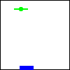
(make-fired (make-posn 10 20) (make-tank 28 -3) (make-posn 32 (- HEIGHT TANK-HEIGHT 10))) 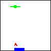
(make-fired (make-posn 20 100) (make-tank 100 3) (make-posn 22 103)) 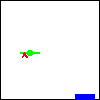
We used a triangle that isn’t available in BSL graphical library. No big deal. Since the itemization in the data definition consists of two items, let us make three examples, using the data examples from above: see figure 25. (Unlike the function tables found in mathematics books, this table is rendered vertically. The left column contains sample inputs for our desired function, the right column lists the corresponding desired results. As you can see, we used the data examples from the first step of the design recipe, and they cover both items of the itemization.
(define (si-render s) (cond [(aim? s) (... (aim-tank s) ... (aim-ufo s) ...)] [(fired? s) (... (fired-tank s) ... (fired-ufo s) ... (fired-missile s) ...)]))
The template contains nearly everything we need to finish our task. To complete the definition, we figure out for each cond line how to combine the values we have to compute the expected result. Beyond the pieces of the input, we may also use globally defined constants, for example, BACKGROUND, which is obviously of help here; primitive or built-in operations; and, if all else fails, wish-list functions, that is, we describe functions we wish we had.
; Tank Image -> Image ; add t to the given image im (define (tank-render t im) im) ; UFO Image -> Image ; add u to the given image im (define (ufo-render u im) im)
(define (si-render s) (cond [(aim? s) (tank-render (aim-tank s) (ufo-render (aim-ufo s) BACKGROUND))] [(fired? s) (tank-render (fired-tank s) (ufo-render (fired-ufo s) (missile-render (fired-missile s) BACKGROUND)))]))
Exercise 87. Design the functions tank-render, ufo-render, and missile-render. Note how the result of
... (tank-render (fired-tank s) (ufo-render (fired-ufo s) (missile-render (fired-missile s) BACKGROUND))) ... is the same as the result of
... (ufo-render (fired-ufo s) (tank-render (fired-tank s) (missile-render (fired-missile s) BACKGROUND))) ... Can you think of other orders that produce the same result?
Exercise 88. Design the function si-game-over? for use as the stop-when handler. The game should stop if the UFO has landed or if the missile has hit the UFO. For both conditions, we recommend that you check for proximity of one object to another.
The stop-when clause allows for an optional second sub-expression, namely a function that renders the final state of the game. Design si-render-final and use it as the second part for your stop-when clause in the main function of exercise 90.
Exercise 89. Design the function si-move, which is called for every clock tick. Accordingly it consumes an element of SIGS and produces another one. Its purposes is to move all objects according to their velocity.
For the random moves of the UFO, use the BSL function random:
; N -> N ; (random n) produces a number in [0,n)— possibly ; a different one each time the expression is evaluated Note that random is the first BSL primitive that is not a mathematical function. While functions in programming languages are inspired by mathematical functions, the two concepts are not identical.To test functions that employ random, use the following:
(define (si-move w) (si-move-proper w (create-random-number w))) With this definition you separate the creation of a random number from the act of moving the game objects. While create-random-number produces possibly different results every time it is called on some fixed state of the world, si-move-proper is still guaranteed to return the same result when given the same input. In short, most of the code remains testable with the techniques you already know. Consider using check-within for create-random-number.
Exercise 90. Design the function si-control, which plays the role of the key event handler. As such it consumes a game state and a KeyEvent and produces a new game state. This specific function should react to three different key events:
pressing the left arrow ensures that the tank moves left;
pressing the right arrow ensures that the tank moves right; and
pressing the space bar fires the missile if it hasn’t been launched yet.
Once you have this function, you can define the si-main function, which uses big-bang to spawn the game-playing window.
Enjoy the game.
; SIGS.v2 -> Image ; render the given game state and added it to BACKGROUND (define (si-render.v2 s) (tank-render (fired-tank s) (ufo-render (fired-ufo s) (missile-render.v2 (fired-missile s) BACKGROUND))))
Data representations are rarely unique. For example, we could use a single
structure type to represent the states of a space invader game—
(define-struct sigs (ufo tank missile)) ; SIGS.v2 (short for “space invader game state” version 2) ; is (make-sigs UFO Tank MissileOrNot) ; interp. represents the state of the space invader game ; A MissileOrNot is one of: ; – false ; – Posn ; interp. false means the missile hasn't been fired yet; ; Posn says the missile has been fired and is at the specified location.
Of course, the functions for this second data representation of states differ from the functions for the first one. In particular, SIGS.v2 consuming functions do not use a cond expression because there is only one kind of element in the collection. Put differently, the design recipe for structures from Designing With Structures suffices. Figure 26 shows the (partial) result.
; MissileOrNot Image -> Image ; add the missile image to sc for m (define (missile-render.v2 m scene) scene)
(define (missile-render.v2 m scene) (cond [(boolean? m) ...] [(posn? m) (... (posn-x m) ... (posn-y m) ...)]))
(define (missile-render.v2 m scene) (cond [(boolean? m) scene] [(posn? m) (place-image MISSILE (posn-x m) (posn-y m) scene)]))
Exercise 92. Design the functions si-move.v2, si-game-over.v2?, and si-control.v2 to complete the game for this second data definition.
Exercise 93. Develop a data representation for the kinds of people you find at a university: student (first and last name, gpa), professor (first and last name, tenure status), and staff (first and last name, salary group). Then develop a template for functions that consume the representation of a person.
spiders, whose relevant attributes are the number of remaining legs (we assume that spiders can lose legs in accidents) and the space they need in case of transport;
elephants, whose only attributes are the space they need in case of transport;
boa constrictor, whose attributes include length and girth; and
armadillo, for whom you must determine appropriate attributes; they need to include attributes that determine space needed for transportation.
Develop a template for functions that consume representations of zoo animals.Design the function fits?. The function consumes a zoo animal and the volume of a cage. It determines whether the cage is large enough for the animal.
Exercise 95. The administration of your home town manages a fleet of vehicles: automobiles, vans, buses, SUVs, and trucks. Develop a data representation for vehicles. The representation of each vehicle must describe the number of passengers that it can comfortably accommodate, its license plate, and its fuel consumption (miles per gallon).
Develop a template for functions that consume representations of vehicles.
; A Coordinate is one of: ; – a negative number ; interp. a point on the Y axis, distance from top ; – a positive number ; interp. a point on the X axis, distance from left ; – a Posn ; interp. a point in a scene, usual interpretation Make up at least two data examples per clause in the data definition. For each of the examples, explain its meaning with a sketch of a canvas.
6.2 Mixing Up Worlds
This section suggests several design problems for world program, starting with simple extension exercises concerning our virtual pets.
Exercise 97. In More Virtual Pets we discuss the creation of virtual pets that come with happiness gauges. One of the virtual pets is a cat, the other one is a chameleon. Each program is dedicated to a single pet, however.
Design a world program that works with both cats and chameleons:where VCat and VCham are your data definitions for exercises exercise 77 and exercise 81, respectively.Given that VAnimal is the collection of world states, you need to designOf course, it remains impossible to change the color of a cat, and no one ever pets a virtual chameleon.
Exercise 98. Design a virtual pet program that supports both a virtual cat and a virtual chameleon. You need a data definition for a zoo containing two animals and functions for dealing with the zoo.
Version 1: Each key event should go to both animals, that is, the down arrow feeds both animals at the same time.
Version 2: Extend your data definition of a two-animal zoo to include a focus, which determines which of the two animals a key stroke controls. Use "k" for “kitty” and "l" for lizard to change focus; once a player hits "k", the following keystrokes apply to the cat only until the player hits "l".
Exercise 99. In its default state, a pedestrian crossing light shows an orange person standing on a red background. When it is time to allow pedestrian to cross the street, the light receives a signal and switches to a green, walking person. This phase lasts for 10 seconds. After that the light displays the digits 9, 8, ..., 0 with odd numbers colored orange and even numbers colored green. When the count-down reaches 0, the light switches back to its default state.
Design a world program that implements such a pedestrian traffic light. The light switches from its default state when you press the space bar on your keyboard. All other transitions should be reactions to clock ticks. You may wish to use the following images
 or you can make up your own stick figures with the image library.
or you can make up your own stick figures with the image library.
Exercise 100. Design a world program that recognizes a pattern in a sequence of KeyEvents. Specifically, it should accept any sequence that starts with "a", is followed by an arbitrarily long mix of "b" and "c", and ends in "d". As soon as it encounters this "d", the program stops running. If these four keys are out of order or if any other key is hit, the program should also shut down.
Initially your program should show a 100 by 100 white rectangle. Once your program has seen an "a", it should display a yellow rectangle of the same size. After encountering the final "d", the color of the rectangle turns green. If any “bad” key event occurs, the program displays a red rectangle.
The goal of recognizing patterns in text is common. Computer scientists have studied the problem in depth; their name for the above kind of pattern is a regular expression. To convey specific regular expressions during discussions, they use a special notation. For example,a (b|c)* d
denotes the above regular expression. Clearly, "acbd" is one example of a string that is an instance of this regular expression; "ad" and "abcd" are two others. Of course, "da", "aa", or "d" do not match.Historical context In the 1950s, Stephen C. Kleene, whom we would call a computer scientist, invented regular expressions as a notation for the kind of character strings accepted by finite state machines (FSM). While finite state machines are briefly discussed in A Bit More About Worlds as one possible design principle for world programs, they play an especially important role here. As the name says, a FSM world program has a finite number of states. Each key event may cause the machine to transition to another state. When a text completely matches a regular expression, the machine transitions to a final state. The program starts out in an initial state.
Typically the states represent what letters the machine expects to see next. For example, here is a state representation for the above regular expression:
; ExpectsToSee is one of: ; – AA ; – BC ; – DD ; – ER (define AA "start, expect to see an 'a' next") (define BC "expect to see: 'b', 'c', or 'd'") (define DD "encountered a 'd', finished") (define ER "error, user pressed illegal key") Note how it includes a state that says an illegal input has been encountered.
6.3 Input Errors
One central point of this chapter concerns the role of predicates. They are critical when you must design functions that process distinct kinds of data, mixes of data. Such mixes come up naturally when your problem statement mentions many different kinds of information, but they also come up when you hand your functions and programs to others. After all, you know and respect your data definitions and function signatures. It is a form of self-delusion to think that we always respect our own function signatures. Calling a function on the wrong kind of data happens to the best of us, and you will make this mistake, too. While many languages are like BSL and expect the programmer to live up to such high standards, others support some way of checking function signatures at the cost of some additional complexity, especially for beginners. We ignore these complications for a while. You never know, however, what your friends and colleagues do and you especially don’t know how someone without knowledge of BSL and programming uses your programs. This section therefore presents one way of protecting programs from inappropriate inputs.
; Number -> Number ; to compute the area of a disk with radius r (define (area-of-disk r) (* 3.14 (* r r)))
> (area-of-disk "my-disk") *: expects a number as 1st argument, given "my-disk"
; Any BSL value is one of: ; – Number ; – Boolean ; – String ; – Image ; – (make-posn Any Any) ; ... ; – (make-tank Any Any) ; ...
; Any -> ??? (define (checked-f v) (cond [(number? v) ...] [(boolean? v) ...] [(string? v) ...] [(image? v) ...] [(posn? v) ...(posn-x v) ... (posn-y v) ...] ... [(tank? v) ...] ; which selectors are needed here? ...))
(error "area of disk: number expected")
(define (checked-area-of-disk v) (cond [(number? v) (area-of-disk v)] [(boolean? v) (error "area of disk: number expected")] [(symbol? v) (error "area of disk: number expected")] [(image? v) (error "area of disk: number expected")] [(posn? v) (error "area of disk: number expected")] ... [(tank? v) (error "area of disk: number expected")] ...))
; Any -> Number ; to compute the area of a disk with radius v, ; if v is a number (define (checked-area-of-disk v) (cond [(number? v) (area-of-disk v)] [else (error "area-of-disk: number expected")]))
> (checked-area-of-disk "my-disk") area-of-disk: number expected
Writing checked functions is important if we distribute our programs for others to use. Designing programs that work properly, however, is far more important. This book focuses on the design process for program proper design and, to do this without distraction, we agree that we always adhere to data definitions and signatures. At least, we almost always do so, and on rare occasions we may ask you to design checked versions of a function or a program.
Exercise 101. A checked version of area-of-disk can also enforce that the arguments to the function are positive numbers, not just arbitrary numbers. Modify checked-area-of-disk in this way.
(define-struct vec (x y))
Develop the function checked-make-vec, which should be understood as a checked version of the primitive operation make-vec. It ensures that the arguments to make-vec are positive numbers, and not just arbitrary numbers. In other words, checked-make-vec enforces our informal data definition.
6.3.1 Predicates
; Any -> ... ; check that a is a proper input for function g (define (checked-g a) (cond [(XYZ? a) (g a)] [else (error "g: bad input")]))
For area-of-disk, which consumes Numbers, the appropriate predicate is clearly number?. In contrast, for some functions like missile-render from above, we clearly need to define our own predicate because MissileOrNot is a “made up” not a built-in data collection. So let us design a predicate for MissileOrNot.
; Any -> Boolean ; is a an element of the MissileOrNot collection? (define (missile-or-not? a) false)
(check-expect (missile-or-not? false) true) (check-expect (missile-or-not? (make-posn 10 2)) true) (check-expect (missile-or-not? "yellow") false)
(check-expect (missile-or-not? true) false) (check-expect (missile-or-not? 10) false) (check-expect (missile-or-not? (circle 3 "solid" "red")) false)
(define (missile-or-not? v) (cond [(number? v) ...] [(boolean? v) ...] [(string? v) ...] [(image? v) ...] [(posn? v) ... (posn-x v) ... (posn-y v) ...] ... [(tank? v) ...] ; which selectors are needed here? ...))
(define (missile-or-not? v) (cond [(boolean? v) ...] [(posn? v) (... (posn-x v) ... (posn-y v) ...)] [else false]))
(define (missile-or-not? v) (cond [(boolean? v) (boolean=? false v)] [(posn? v) true] [else false]))
Exercise 103. Design predicates for the following data definitions from the preceding section: SIGS, Coordinate (exercise 96), and VAnimal.
6.3.2 Checking the World
A world program is a place where things can easily go wrong. Even though we just agreed to trust that our functions are always applied to the proper kind of data, in a world program we may juggle too many things at once to have that much trust in ourselves. When we design a world program that takes care of clock ticks, mouse clicks, key strokes, and rendering, it is just too easy to get one of those interplays wrong. Of course, going wrong doesn’t mean that BSL recognizes the mistake immediately. For example, one of our functions may produce a result that isn’t quite an element of your data representation for world states. Nevertheless, big-bang accepts this piece of data and holds on to it, until the next event takes place. Then the next event handler receives this not-quite correct piece of data and it may fail because it really works only for proper world state representations. A worst-case scenario is that even the second and third and fourth event handling step copes with not-quite proper worlds, and it all blows up much later in the process.
; Any -> Boolean ; is x between 0 (inclusive) and 1 (exclusive)? (check-expect (between-0-and-1? "a") false) (check-expect (between-0-and-1? 1.2) false) (check-expect (between-0-and-1? 0.2) true) (check-expect (between-0-and-1? 0.0) true) (check-expect (between-0-and-1? 1.0) false) (define (between-0-and-1? x) (and (number? x) (<= 0 x) (< x 1)))
(define (main s0) (big-bang s0 ... (check-with between-0-and-1?) ...))
the space invader world program,
the virtual pet program (exercise 97),
the editor program (A Graphical Editor).
6.3.3 Equality Predicates
; TrafficLight TrafficLight -> Boolean ; determine whether two the (states of) traffic lights are equal (check-expect (light=? "red" "red") true) (check-expect (light=? "red" "green") false) (check-expect (light=? "green" "green") true) (check-expect (light=? "yellow" "yellow") true) (define (light=? a-value another-value) (string=? a-value another-value))
> (light=? "salad" "greens") false
> (light=? "beans" 10) string=?: expects a string as 2nd argument, given 10
> (boolean=? "true" 10) boolean=?: expects a boolean as 1st argument, given "true"
; Any -> Boolean ; is the given value an element of TrafficLight? (define (light? x) (cond [(string? x) (or (string=? "red" x) (string=? "green" x) (string=? "yellow" x))] [else false]))
; Any Any -> Boolean ; to compare two elements of TrafficLight for equality (check-expect (light=? "red" "red") true) (check-expect (light=? "red" "green") false) (check-expect (light=? "green" "green") true) (check-expect (light=? "yellow" "yellow") true) (define (light=? a-value another-value) (if (and (light? a-value) (light? another-value)) (string=? a-value another-value) (error "traffic light expected, given: some other value")))
Exercise 105. Revise light=? so that the error message specifies which of the two arguments aren’t elements of TrafficLight.
While it is unlikely that your programs will use light=?, your world programs ought to use key=? and mouse=?, two equality predicates that we briefly mentioned at the end of the last subsection. Naturally, key=? is an operation for comparing two KeyEvents; similarly, mouse=? compares two MouseEvts. While both kinds of events are represented as strings, it is important to realize that not all strings represent key events or mouse events.
We recommend using key=? in key event handlers and mouse=? in mouse event handlers from now on. The use of key=? in a key event handler ensures that the function really compares strings that represent key events and not arbitrary strings. As soon as, say, the function is accidentally applied to "hello\n world", key=? signals an error and thus informs us that something is wrong.
7 Summary
In this first part of the book, you learned a bunch of simple but important lessons. Here is a quick summary:
A good programmer designs programs. A bad programmer tinkers until it seems to work.
The design recipe has two important dimensions. In one, it tells which steps you need to take to design a program. In the other, it explains how the chosen data representation influence the design process.
Every well-designed and well-written program consists of many structure type definitions, data definitions, and function definitions. Batch programs designate a single function as the main function. Interactive programs use their main function to designate a value as the initial state of the program, one function as an image-producing output function, and at most three others as event handlers: one for clock ticks, one for mouse clicks, one for key events.
Like all programming languages, Beginning Student Language comes with a vocabulary and a grammar; each sentence has a meaning and programmers must understand meaning so that they can design programs. On many occasions, you must supplement the language proper with libraries of additional tools.
What tools programming languages offer matters to program design. In this spirit, make sure you understand the following terms: structure type definition; function definition; constant definition; structure instance; data definition; and big-bang.